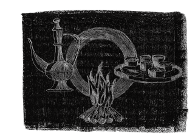
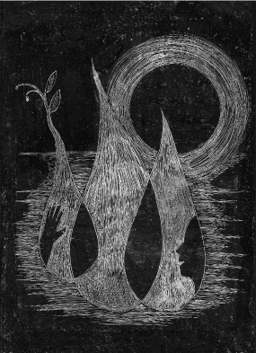
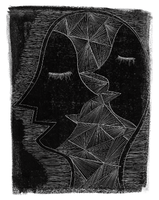
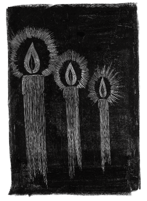
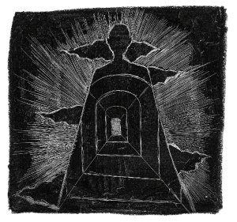

| インドの哲人の言葉たち－インド思想古典文学を辿る－ | |
| たびんちゅ てらだ | |
| Tabinchu Terada (2008) | |
ブラフマンとは宇宙の因なのか？
われわれはどこから来たのか？
われわれは何によって生きているのか？
われわれはどこへ行くのか？
ブラフマンを知る者よ、何ものに支配されて、われらは苦しみや喜びのうちにいるのか？
（シュヴェーターシュヴァタラ・ウパニシャッド）
序
ヒンドゥー教の聖地の一つ、インドのヴァラナシのガンジス河の畔を歩くと、こんなかけ声が聞こえてくる─
ラァーム ニャーム シャッティアヘ ラァーム ニャーム シャッティアヘ ...
それは、きらびやかな金色の刺繍を施したオレンジ色の布掛けを被せた荷を二本の竹で担いでいる男たちからのものだ。彼らは段差の大きいコンクリートの階段をその荷を決して落とすまいと竹を強く握りしめ降りて行く。その荷は河原に積み上げられた太い薪の上に置かれ、そして火が入れられる。火葬だ。亡骸を包む布が赤いときは女で、白い布のときは男。このガンジス河の河岸には、火葬場がいくつも並んでいる。
火葬場といっても、もうそれは地元のインド人や、インドに観光に訪れた旅人たちがたくさん歩いているその河辺にある。もちろん歩いていれば、蒼白い煙がもうもうと上がっているその光景が目に飛び込んでくる。数あるガート（河岸の階段状の場所）の一つ、ハリスチャンドラガートの火葬場を見下ろす位置には、柵で囲まれたちょっとした広場がある。そこには火葬場を観覧するかのように、ご丁寧にベンチまで置かれている。形を変えながら、怒ったような、まるでいくつも鉾の刃先が天に向いているようなオレンジ色の炎を、広場の柵に寄りかかった旅人たちが言葉もなく、ただ見つめている。
これほど衆人が見ている前で隠されることなく人が焼かれているのを見ていると、まるで琥珀の中に閉じ込められた虫か何かを見ているような無感情な光景に映る。しかしそれは、まさに死体であり、布が焼けてくると、その琥珀色の炎の中にすっかり人の形が真っ黒に浮かび上がる。亡骸が載せられたいくつかの薪組から上がる炎の間を縫って、長い竹竿を持った隠坊が歩いている。彼はその真っ黒な人形の頭を狙って、両手でその竹竿を握りしめ、竿先で力強くその頭を突き抜く。焼けにくい頭蓋骨を突き砕くことが火葬を遂行する彼の職務なのだ。その琥珀のような炎の中の黒い塊が破裂音とともに、時折、跳ね上がる─火葬の炎に気づいてびっくりして飛び起きるかのように。
通りすがりの旅人には見ず知らずの人の亡骸が炎に包まれて焼かれていく様は、故人の別れを映す悲しみに包まれた場面に出くわしたというよりは、人の命の儚さを映し出すひどく透明な景色に見えてしまう。いつかは入るその炎の中に自分自身を置いて、厭世観に苛まれる感覚に落ち込む気さえしてくるのだ。ほら、あそこの西洋人のバックパッカー二人組もさっきから一言も話さずに煙と炎を見つめたまま動かなくなっている。人の肉を焼く炎を生み出したあと舞い上がった無数の白い灰が、中には燃え尽きた肉のものも含まれているかもしれない灰が、自分たちに降り落ちてくるのを気にもとめずに。しかしインド人たちは、そんな人が焼かれていく光景をさして気にもとめずに河辺でくつろいでおしゃべりしている。焼かれた遺体は遺灰になったというよりは、黒こげの塊となって河に流される。そして、その川下では、人々が赤茶色くインド紅茶のように濁った水で洗濯したり、さらには水浴びしたりしている。特に早朝にはガートは、たくさんの沐浴者たちでごったがえす。
わたしはかつてスリランカで仏教徒のスリランカ人とヒンドゥー教徒の彼の義理の兄と、ジャックフルーツのカレーなどを肴に、椰子の実からつくった酒アラックを酌み交わしながらいつのまにか輪廻について議論したことがある。わたしはビッグバン宇宙説を根拠に、宇宙の始まりには生命もなかったはずだと、すなわち、輪廻もなかったはずだと主張したのだった。しかし彼らは、ビッグバン宇宙説の存在を知っていたうえで、このビッグバン宇宙説による宇宙開闢にもまったく動じることなく、二人して口元に笑みさえ浮かべながら、わたしに、こう聞き返した。
「それでは、あなたはどこから来たのか？」
わたしは、この問いに答えることができなかった。
ビッグバン宇宙説とは現在観測される領域、つまり、われわれが宇宙と呼ぶものが過去のある時点から爆発的に膨張して形成されたという説だ。このことは遠方にある銀河を観測すると、すべての銀河は距離に比例した速度で遠ざかっているというハッブルの膨張則が支持している。また、その膨張が時間にして百数十億年という宇宙の年齢に対して数十万年以下にまでさかのぼることができること、大きさで言えば、現在の宇宙の大きさの10-9（一〇億分の一）以下までさかのぼることができることが、宇宙のどの方向からも均等にやってくる二・七Ｋ（ケルビン）の黒体輻射によって支持されている。さらには宇宙の始まりから10-36秒、大きさにしてたった一センチにまでさかのぼれるのだとさえも考えられている。しかし、自然現象を雄弁に語っているはずのこうした科学理論が、生命の本質を説明するには、ずいぶん頼りないものに感じられたのだった。
そう、ここは輪廻思想発祥の地、インド。
仏教を通して輪廻思想に少しは慣れているはずの日本人にも神秘的とも映るインド文化は、復活思想のキリスト教文化の中で育った西洋人にはきっと、さらに衝撃的だろう。インドの思想は遠いむかしでさえ、遙か離れた日本にまで大きな影響を及ぼした。
「生まれ変わったら何になりたい？」
何気なく口にするが、知らず知らずに染みついているこの輪廻思想を、われわれはよく知らないのだ。
「神秘の国インド」、"Mysterious India" ─人はインドをこう称す。象の頭をつけた異形の神ガネーシャに手を合わせて祈り、女神カーリーに若い牡山羊を犠牲に捧げ、河に黒焦げの遺体を流し、いまだに差別的な階級制度ヴァルナを色濃く残す国─どこか怪しいイメージ。
その一方で、近年では、ＩＴ（情報技術）に強いインド人というイメージをおもちの人もいるのではないだろうか。算用数字をアラビア数字などと呼ぶけれど、実はこの算用数字の表記方法はインドで考えられたものなのだ。この呼び名は西洋人がこの表記方法をアラブ人から学んだことに由来しているにすぎない。０を見出したのはインド人なのだ。
そして、「それでは、あなたはどこから来たのか？」という彼らのことばの背景に、わたしは輪廻という考え方には、論理的な思想がどっかりと鎮座しているように感じた。
「地球の自転という事実が、決して五感ではそれと知られず、科学的理性を媒介として辛うじて認識されるように、輪廻転生も亦、日常の感覚や知性だけではつかまえられず、何かたしかな、きわめて正確で体系的でもあり直観的でもあるような、そういう超理性を以てして、はじめて認識されるのではなかろうか。」
三島由紀夫の「豊饒の海・暁の寺」の中で、このヴァラナシを訪れた主人公・本多は、輪廻の夢を見て、夢の中でそう考える。はたして、インド思想は、怪しい思想なのか？論理的な思想なのか？インド人の世界観、死生観といった思想の源泉を、アーリア人がインド亜大陸に侵入してきた紀元前一五世紀ごろに詠まれたという宗教詩リグ・ヴェーダ、それに続く宇宙の起源や人間の本質を考察した哲学書ウパニシャッドをはじめ、仏教の無我や空の思想、シャンカラの不二一元論などのインド思想を展開していった古典文学を通して、ご紹介していきたい。
インドラ、ヴィシュヌ、それにのちにシヴァと呼ばれるようになったルドラなど、たくさんの神々に讃歌を詠んでいたリグ・ヴェーダ時代の人々はやがて、宇宙はどのように始まったか、に思いを馳せた。今から三〇〇〇年ほどむかしに詠まれたこの詩から、彼らの哲学的思索が始まったのだ。まずはリグ・ヴェーダ一〇・一二九と番号が付されたこの詩から、ご紹介しよう。
『そのとき、無もなかった、有もなかった
空界も、その上の天もなかった
何ものかが蔽い始めた、どこに、何ものの庇護の下に
水はあったのか、測り知れない深さの水が
そのとき、死もなかった、不死もなかった
昼夜を分かつ標識（星辰たち）もなく
彼の唯一物は息なく呼吸していた
他には何もなかった
暗黒が暗黒で蔽われていた始まりのとき
この一切は見分けようもなく混沌としていた
一切は存在し空虚で形もなかった
熱の力により彼の唯一物は生まれた
初めに意欲が湧き上がり、
思考の第一の種子となり芽を吹いた
心の中に熟慮して求めた詩仙らは
有の親縁を無の中に見出した
彼らの張った縄は横に伸ばされた
何が上で、何が下であったか
孕ませる力と、孕む力があった
自存力はここに、衝動力は向こうに
誰が正しく知っているというのか、誰がここに宣言することができるというのか、
この創造がどこから生じ、どこから来たのかを
神々さえこの創造の後に現れたのだ
いったい誰が知っているのか、始まりにおいて、この創造がどこからきたのかを
この創造の初めの源たる彼、
彼がこのすべてを創り出したのか、それとも創り出していないのか
最高天でこの世界を監視する眼をもつ者
彼はこれを知っているのか、いや彼すら知らないのかもしれない』
（リグ・ヴェーダ 一〇・一二九）
この詩は、宇宙開闢の詩と呼ばれている。
目次
序
神々への讃歌
（リグ・ヴェーダの章）
有の哲学
（チャーンドーギヤ・ウパニシャッド 第六篇の章）
輪廻
（チャーンドーギヤ・ウパニシャッド 第五篇の章）
梵我一如
（ブリハッド・アーラヌヤカ・ウパニシャッド 第四篇の章）
神の歌
（バガヴァッド・ギーターの章）
サーンキヤ二元論
（サーンキヤ・カーリカーの章）
無我
（ミリンダ王の問いの章）
空
（中論の章）
シャンカラ不二一元論
（ブラフマスートラバーシュヤの章）
神の遊戯
（シュリーバーシュヤの章）
Truth is ...
神々への讃歌
「ベナレスは、聖地のなかの聖地であり、ヒンズー教徒たちのエルサレムである。シヴァ神の御座所なる雪山ヒマラヤの、雪解水を享けて流れるガンジスが、絶妙な三日月形をえがいて彎曲するところ、その西岸の古名ヴァラナシ、すなわちベナレスの町がある。それは、カリー女神の良人シヴァに奉献された町であり、天国への主門と考えられてきた。それは又各地からの順礼の目標地であり、ガンジスに加えて、ドゥタパパ、キルナ、ヤムナ、サワスワティの五聖河の合流地点と考えられるここの水を浴びれば、来世の至福は居ながらにして成るのだった。」（三島由紀夫、暁の寺より）
このベナレスは、「序」で、ご紹介した、聖地ヴァラナシのことである。現在のインドでは、ベナレスは、ふたたび古名ヴァラナシと呼ばれている。ヴァナラシといえば、多くのインドツアーでも訪れるところだ。街には、シヴァの画や、シヴァを象徴するリンガをたくさん目にする。シヴァは、虎の皮を腰にまとい、首にはコブラを巻き付け、三つ叉の鉾を手にし、白い牡牛ナンディンを随えた姿で、よく描かれている。またリンガは、多くは先端が丸められた円柱や卵形の石であり、男根を表している。八百万の神々がいるというインドであるが、現在のヒンドゥー教ではシヴァとヴィシュヌが二大神とされる。この「暁の寺」の件にもあるように、ヴァラナシはシヴァ派の聖地といえる。
長いインドの歴史の中でも最も古い文学リグ・ヴェーダにも、このシヴァとヴィシュヌへの讃歌が詠まれている。シヴァはリグ・ヴェーダ時代にはルドラと呼ばれていた。まずは、ルドラへの讃歌からご紹介しよう。
『マルト群神の父よ、あなたの恵みがわれらに近づきますように。われらが陽の光を見ることを遮ることがありませんように。
勇者（ルドラ）はわれらの駿馬に寛大でありますように。ルドラよ、われらの子孫が増えますように。
ルドラよ、あなたがくださった最もよく効く薬で、わたしは百の冬をも越えたいのです。
恨みや憎しみをわれらから遠くに追い払いください、病や苦難をも、あらゆる方角へ。
ルドラよ、あなたは生まれた者たちのうちで最も栄誉ある者、雷鳴で身を固めた、力ある者たちのうちで最も力ある者。
われらを苦難を越えて安寧へと運んでください。災いの来襲を追い払いください。
ルドラよ、強大な神よ、祭祀で、誤った讃辞によって、あるいは他の神との合同の祈願によって、われらがあなたの怒りに触れることがありませんように。
力を強める薬でわれらの勇者たち（男たち）を駆り立ててください。わたしは、あなたがすべての医者のうちで最も優れ、名が高いとお聞きしております。
「讃歌によって、ルドラの機嫌をとろう」と、供物や祈願によって崇められる者。
黄褐色で、頬美しく、寛大で、呼びかけやすい神が、われらを邪念に屈服させることがありませんように。
マルト群神が取り巻く強大なる者が、救いを願うわたしに、最も鼓舞させる食べ物で、元気をお与えくださいました。
灼けるような太陽の光のなかで日陰を見つける者のごとく、ルドラの恵みで、わたしは傷つくことがありませんように。
ルドラよ、健康を与え、心地よさをもたらす、あなたの慈悲深い手はどこにあるのですか？
神々がつかわした苦悩を取り除くその手は？
強き者よ、哀れみをわたしにお与えください。
強き、偉大な、黄褐色の、肌の美しい彼に、わたしは大いなる讃歌を詠います。
われらは輝く神を崇拝いたします。われらは賛美します、壮麗なる名、ルドラを。
しっかりした手足、多くの姿をもつ、強き、黄褐色の者は、輝く黄金の装飾で身を飾る。
尊き者、あなたは、弓矢をになう。尊き者、色とりどりで、栄光の、あなたの首飾り。
尊き者、あなたは、ここで魔を切り刻む。ルドラよ、あなたより強大なる者はない。
讃えよ、彼を、車に乗る者、若き者、名高き者、森の恐ろしい獣を殺戮するごとく猛し者を。
ルドラよ、讃えたならば、詠い手に慈悲深くおありください。あなたの武器でわれらと異なる者を打ち倒しください。
ルドラよ、わたしは、あなたが近づくと、あなたに頭を下げましょう、ほめてくださる父を前にした少年のように。
わたしはあなたを讃えます、惜しみなく与える者を、勇者たちの主よ。讃えられたとき、あなたは、われらに薬をお与えください。
マルト群神よ、清浄なる薬、それは、最も効能があり、最も健康によいのです。
ルドラよ、われらの祖先マヌが選んだその薬を、わたしは望みます、われらの利益と富のために。
ルドラが放った矢は、われらのそばで、その向きを変えますように。荒ぶる者の激しい怒りはわれらを避けていきますように。
惜しみない神よ、あなたの強い弓をわれらの王子からそらせてください。あなたは、われらの子孫に慈悲深くおありください。
黄褐色の牡牛よ、怒ることなく、神よ、われらを殺すことなく、あなたの本性をお示しください。
ルドラよ、ここに、われらの祈願に耳を傾けてください。
われらは高らかに語りたいのです、集いにおいて、勇者たちとともに。』
（リグ・ヴェーダ 二・三三、ルドラの詩）
リグ・ヴェーダ時代には、シヴァは暴風雨の神とされていた。また、インダス文明の印章の中に牡牛崇拝やリンガ崇拝が見られることから、シヴァ信仰が、パキスタンで発掘されたモヘンジョダロなどのインダス文明の信仰と、つながりがあるのではないかとも言われている。
次に、ヴィシュヌへの讃歌をご紹介しよう。ヴィシュヌは、四本の腕をもち、右手には円盤と棍棒、左手には法螺貝と蓮の花を手にした姿などで、よく描かれている。霊鳥ガルーダに乗った姿で描かれることもある。また、ヴィシュヌは、いろいろな姿に権化したとされている。たとえば、海底に沈んだ大地を支えて元に戻したという野猪や、悪魔を殺した人獅子の姿などがあるが、中でも英雄クリシュナとしての伝説が人々に親しまれている。横笛を吹くクリシュナの姿は、インドでは、よく見られる画だ。タージマハールで有名なアグラーから北西へ約六〇キロにあるマトゥーラが、クリシュナの生誕地とされ、クリシュナ信仰の聖地となっている。
リグ・ヴェーダでは、地・空・天を三歩で闊歩した闊歩者としてのヴィシュヌが詠われている。
『わたしは、ヴィシュヌの大いなる功績を告げよう。彼は、地界と空界の領域を測った。
彼は、高き集会の場（天界）を支えた。大きく闊歩して、三歩で歩んだ。
この大いなる功績のために、ヴィシュヌは讃えられる。山を、息を殺して歩き回る、恐ろしい野獣のように。
彼の大きく広がる三歩のうちに、すべての生き物たちは住み処を得る。
威力を高めるこの讃歌はヴィシュヌへと届け。大きく闊歩し、山に住まう牡牛（ヴィシュヌ）へ。
ひとりで、三歩をもって、この遠く広がる人々の住み処を測った彼へ。
彼の三つどころは蜜で満ち、尽きることなく、喜びがともにあるように、
彼ひとりで、三つからなる、地界、空界、天界と、すべての生き物たちを、まさに支える。
わたしは、彼が愛する住まいに至りたいのです、神々に帰依する者たちが幸いであるところの。
泉があり、大きく闊歩する者の縁者がおり、ヴィシュヌの高き歩みには蜂蜜酒の泉があるのだから。
われらは、あなたがた（インドラとヴィシュヌ）の住まいによろこんで行きましょう、角が多く敏捷な牛たちのいるところの、
強く、われらを照らす、大きく闊歩する牡牛の、崇高なる住まいに。』
（リグ・ヴェーダ 一・一五四、ヴィシュヌの詩）
ヴィシュヌはリグ・ヴェーダでは世界に広がる太陽の光照作用を神格化した神と考えられている。今でこそ二大神のシヴァとヴィシュヌであるが、一〇二八あるリグ・ヴェーダ讃歌の中でルドラが詠まれた讃歌は三～五つにすぎず、ヴィシュヌが詠まれた讃歌も五つにすぎなかった。最も偉大な神はインドラで、讃歌の約四分の一はインドラに捧げられた。インドラはのちに仏教に取り入れられ、日本では仏法を護る神、帝釈天として知られている。
仏教などを通じてわれわれにも馴染みのある神々もリグ・ヴェーダには少なからず登場する。弁才天は、元はリグ・ヴェーダに登場する河の女神サラスヴァティーとされ、インドでも同じく琵琶を持つ姿で描かれている。地獄で人間の生前の善悪を裁くとされ、俗に嘘つきの舌を抜くという閻魔天も、リグ・ヴェーダに登場する。閻魔はヤマの音写としての漢訳である。ここではご紹介しないが、リグ・ヴェーダでは、ヤマは最初に死者のための道を発見したことが詠われている。そして後世、ヤマは死者の王とされた。ヤマの名は火の神アグニに捧げられた葬送の詩の中にも登場する。
『アグニよ、彼（死者）を焼き尽くすことなかれ、呑み尽くすことなかれ。彼の身体も、彼の肌も消し散らすことなかれ。
ジャータ・ヴェーダス（アグニ）よ、あなたが彼を呑み頃にしたならば、彼を祖霊への道へ送り出し給え。
ジャータ・ヴェーダスよ、あなたが彼を呑み頃にしたならば、彼を祖霊に引き渡し給え。
彼を待ち受ける彼の世に到達したとき、彼は神々の従者となろう。
あなたの眼は太陽へと赴く、気息は風へと。規範に従って、地に行き給え、天に行き給え。
もしそれがあなたに定められたものならば、泉に行き給え。あなたの手足をもって、植物をあなたの住み処とし給え。
山羊があなたの分け前である。熱をもって彼を呑み給え。あなたの猛る炎で、増してくる輝きで、彼を燃やし給え。
ジャータ・ヴェーダスよ、あなたのめでたい姿で、この男を敬虔なる人のところへ連れて行き給え。
アグニよ、彼を祖霊のもとに送り返し給え、あなたに捧げられ、われらの供物とともに行く彼を。
ジャータ・ヴェーダスよ、新しい生命をまとって、彼に子孫を増やさせ給え。彼を新たな身体と合一させ給え。
黒い鳥、蟻、蛇、獣が傷つけたところを、そのすべてを焼くアグニは、それを清め給え、そして、婆羅門の喉を通る神酒ソーマをも。
アグニの炎に対して牝牛で覆い給え。脂と髄で包み給え。
剛胆なる者が、怒って、あなたを襲い、猛る熱で、あなたを包み、呑みそこなうように。
アグニよ、この盃をこぼすことなかれ、神々や神酒ソーマを飲む者たちが愛する盃を。
この盃、神々の飲酒に供するこの盃、これで不死の神々は陶酔する。
わたしは、肉を喰らうアグニを、遠くに送る。彼は不浄を運びながらヤマの支配する者たちのもとへ発つ。
しかれど、ここに、他のジャータ・ヴェーダスがいる、神々への供物を運べ、彼は巧みであるのだから。
わたしは、あなたの住まいに入る神を、祖霊祭のために選ぶ、肉を喰らうアグニとは別のこの他のジャータ・ヴェーダスを眺めながら。最高の集いにおいて彼に火を点させ給え。
アグニよ、天則を持続する祖霊を祀るべき彼に、祖霊と神々への供物を告げさせ給え。
まさに喜んで、われらはあなたを据えましょう。まさに喜んで、あなたを燃やし、輝かせましょう。
喜んで、切望する祖霊を近くに連れて来給え、供物を食してもらうがために。
アグニよ、鎮まり給え、あなたが焦がし、焼いたところをよみがえらせ給え。
ここに、水百合を生えさせ給え、草も、やわらかく、そして葉を茂らせて。
清涼さよ、あなたは植物を清涼にする、新鮮な水よ、ハーブを生き生きとさせる。
雌蛙とともにこちらへおいでください。ここにおられるアグニを大いなる喜びでみたしてください。』
（リグ・ヴェーダ 一〇・一六、葬送の詩）
古代インド人は火の神アグニに、死者を、祖霊のもとに、ヤマの国に送り届けることを願った。リグ・ヴェーダの時代の人々は、ヤマの国は最高天にある楽園にあって、そこで祖霊たちが幸せに暮らしていると考えていたのだ。彼らは炎の立ち昇るその先に、死者のあの世での幸福を祈ったのだった。
今では人々が輪廻を強く信じている輪廻思想の国インドであるが、その歴史の源泉リグ・ヴェーダ時代の後半、紀元前八世紀であっても、輪廻思想も、また地獄の観念すらも、まだその形を現していなかった。
有の哲学
たくさんの神々に讃歌を詠んでいたリグ・ヴェーダ時代の人々は、次第に祈祷句や祭式の規定やその意義の解釈を重視する祭祀主義の宗教を奉じていった。しかし、そんな中、リグ・ヴェーダ時代の後期に詠まれた宇宙開闢の詩に始まる哲学的思想から、宇宙の起源や人間の本質を究めようとした哲学書ウパニシャッドが生まれた。ウパニシャッドの二大雄編と称されるチャーンドーギヤ・ウパニシャッドとブリハッド・アーラヌヤカ・ウパニシャッドは、紀元前六世紀ごろまでに成立したといわれている。このウパニシャッドの二大雄編では、二人の哲人が活躍する。その一人が、有の哲学を唱えたウッダーラカ・アールニだ。彼は、チャーンドーギヤ・ウパニシャッドの中で、万物の本質について追究していく。
『ハリ、オーム
かつてシヴェータケートゥ・アールネーヤがいた。彼に、彼の父（ウッダーラカ・アールニ）が言った、
「シヴェータケートゥよ、学業に入れ。わが子よ、われら一族には、ヴェーダを学ぶことなく、生まれだけで婆羅門となったものはいない。」
シヴェータケートゥは、一二歳のとき師に就いて、すべてのヴェーダを学び終え、二四歳のとき父のもとに帰ってきた。彼は、得意になり、深く理解したと自負し、意気揚々であった。
彼に父が言った、
「シヴェータケートゥよ、おまえは、得意になり、深く理解したと自負し、意気揚々としている。わが子よ、おまえは、聞かなかったことも聞いたことになり、考えられなかったことも考えたことになり、認識できなかったことも認識できたことになる教説を尋ねたことがあろうか？」
「その教説とはどういうものでしょう？」彼は言った。
父は答えた、
「わが子よ、土の一塊によって土で作られたあらゆるものが知られる。違いは、壺、皿などの名称だけにあり、名称はことばによる捕捉によって生じたにすぎず、すべては土であるということが真実なのである。
さらに、わが子よ、銅の一塊によって銅でできたあらゆるものが知られる。違いは、個々の銅製のものの名称だけにあり、名称はことばによる捕捉によって生じたにすぎず、すべては銅であるということが真実なのである。
さらに、わが子よ、一つの鋏によって鉄でできたあらゆるものが知られる。違いは、個々の鉄製のものの名称だけにあり、名称はことばによる捕捉によって生じたにすぎず、すべては鉄であるということが真実なのである。わが子よ、その教説とはこのようなものである。」
息子は言った、
「きっと、あの師たちはそのことを知らなかったのです。もし知っていれば、どうしてそのことを話してくださらないことがありましょう。ですから、どうかそのことをわたしにお教えください。」
「よろしい」、父は言った。
「わが子よ、世界の始まりのときには有だけがあった。それは唯一のもので、第二のものなどなかった。『世界の始まりのときには無だけがあった。それは唯一のもので、第二のものなどなかった。その無から有が生じた』と言う他の者たちもいる。
しかし、わが子よ、どうしてそのようなことがあろう？どうして有が無から生じることがあろう？そうではない、わが子よ、世界の始まりのときには有だけがあった。それは唯一のもので、第二のものなどなかった。」と、父は言った。
「それは考えた、多くなろう、繁殖しよう、と。それは、熱を創り出した。
その熱は考えた、多くなろう、繁殖しよう、と。それは水を創り出した。
であるから、暑いところではどこであろうと、人は汗をかくのである。つまり、熱から水が生じるのである。
水は考えた、多くなろう、繁殖しよう、と。それは食べ物を創り出した。
であるから、雨が降るところではどこであろうと、食べ物がたくさん生み出されるのである。つまり、水から食べ物が生じるのである。
すべての生き物は三つの起源のみがある、卵から生じるもの（孵化、熱から生じるもの）、生命から生じるもの（胎生、水から生じるもの）、芽から生じるもの（出芽、食べ物から生じるもの）、である。
その有は考えた、この三つに生命としてのアートマンをもって入り込み、名称と形態とを発展させよう、と。
そして、その有は、三つのそれぞれを三重にしよう、その三つに生命としてのアートマンをもって入り込み、そして、名称と形態とを発展させた。
その有は、それぞれを三重にした。それらがどのように三重になっているか、それを学びなさい、わが子よ。』
ウッダーラカ・アールニは、壺、皿などといった多様性の中に土であるという根本的なものを認識することによって、土で作られたあらゆるものが知られる、と語っている。また、宇宙が、世界の始まりのときには唯一のものであった<有>から展開した一元論的流出論を語っている。そして、その<有>が、孵化、胎生、出芽の三つの起源から生まれるすべての生き物に生命としてのアートマンをもって、入り込んでいるという。そしてこれら三つの熱、水、食べ物から、「あらゆるものが知られる」ことを、たとえば次のように語る。
『燃え盛る火の赤い色は、熱の色である。火の白い色は水の色、火の黒い色は食べ物の色である。こうして、われわれが火と呼ぶものは、単に変容にすぎず、ことばから生じた名称である。真にあるものは三つの色なのである。
...
これを知るむかしの偉大なる家長、学者たちは、このことを言ったのである、「いまや、われらが、聞かなかった、考えられなかった、認識できなかった、どのようなものを誰も語ることはできないであろう」、と。これら三つの色から、彼らはすべてを知っていたのであるから。』
また、ウッダーラカ・アールニは、人間の各部分や機能も同じように、これら三つから構成されていることを、次のような例を挙げて語る。

『「わが子よ、人間は一六の部分からできている。一五日間食べ物を食べてはいけない、水は好きなだけ飲んでもよいが。気息は水からのものであるから、水を飲んでいる限り、気息が途絶えることはないであろう。」
シヴェータケートゥは一五日間食べ物を食べなかった。そして、彼は父にもとに来て言った、
「何を唱えましょう？」
父は言った、
「讃誦、祭詞、旋律を唱えてみなさい。」
「まったく頭に浮かんできません」と、彼は答えた。
彼に向かって父は言った、
「大いに燃えていた火のあとに、蛍ほどの炭火が残っていても、これ以上燃え盛ることはない。このように、わが子よ、一六の部分のうちの一つが残っていたとしても、この一つによって、ヴェーダを思い起こすことはできないのである。食事を取ってきなさい。
そのあとで、わたしのことを理解できるよう。」
シヴェータケートゥが食事を取ったあと、父の近くにやってきた。そして、彼の父が尋ねることはどのようなものでも、すべて暗記していた。父は彼に言った、
「大いに燃えていた火のあとに、蛍ほどの炭火が残っていたならば、その上に草を載せることによって、再び燃え立ち、これよりも燃え盛るように、
わが子よ、一六の部分の一つがおまえに残されていたので、食べ物によって燃え立ったのだ。それによって、今、おまえはヴェーダを思い出したのだ。」
このあと、父が次のように言って、彼は父の言う意味を理解した。
「わが子よ、思考は食べ物からなり、気息は水からなり、ことばは熱からなる。」彼は父の言うことを理解した、そう、理解したのだ。』
ウッダーラカ・アールニは、さらに熱、水、食べ物の三つと人間との関係を語ったあと、シヴェータケートゥに向かってこう言う。
『わが子よ、これら三つの熱、水、食べ物が人間に及んで、どのようにそれぞれ三重となっているか、それは先に話した。人間がこの世から去るときに、ことばは思考に、思考は気息に、気息は熱に、熱は最高の有に同化する。
この微細なもの、すべての存在するものにあるものは、それを本質とする。それは真実である。それはアートマンである、シヴェータケートゥよ、おまえがそれである。』
（チャーンドーギヤ・ウパニシャッド 第六篇）
輪廻
「ゆく河の流れは絶えずして、しかももとの水にあらず」─河の流れとは不思議なものだ。人が焼かれて流されていくガンジス河のそんな流れを見ていると、むかしのインドの人もこの流れを見て輪廻思想にたどり着いたような気がしてくる。けれど、初期の輪廻思想は、こうした火葬の炎から語られる。
「人は、この世からどこへと向かうか知っておろうか？」
プラーヴァーハナ・ジャイヴァリ王が、ウッダーラカ・アールニの子シヴェータケートゥに、こう問うた。ウッダーラカ・アールニは、先のチャーンドーギヤ・ウパニシャッド第六篇では、哲人として活躍していのだが、ここでは、彼の息子シヴェータケートゥが受けた王のこの問いについて婆羅門（僧侶・祭司階級）である彼も知らなかったのだった。そこで、このことを問うためにウッダーラカ・アールニ自身が王のもとをたずねる。そこで、王は、婆羅門に伝わったことがない王族だけの教えについて語り始める。
『ガウタマ（ウッダーラカ・アールニ）よ、かなたの世界は、祭火である。太陽がその薪である。光線が煙、昼が炎、月が炭、星が火花である。
その祭火に神々は神酒シュラーッダを供物として注ぐ。その供物から月の王ソーマが現れる。
ガウタマよ、雨の神パルジャニヤは、祭火である。風がその薪である。雲が煙、稲妻が炎、雷霆が炭、雹が火花なのである。
その祭火に神々はソーマ王を供物として注ぐ。その供物から雨が生じるのである。
ガウタマよ、大地は、祭火である。歳がその薪である。虚空が煙、夜が炎、四方が炭、四維が火花なのである。
その祭火に神々は雨を供物として注ぐ。その供物から食べ物が生じるのである。
ガウタマよ、男は、祭火である。言葉がその薪である。息が煙、舌が炎、眼が炭、耳が火花なのである。
その祭火に神々は食べ物を供物として注ぐ。その供物から精子が生じるのである。
ガウタマよ、女は、祭火である。腰がその薪である。誘いが煙、その門が炎、契りが炭、その悦が火花なのである。
その祭火に神々は精子を供物として注ぐ。その供物から胎児が生じるのである。
こうして、第五の供物の奉納において、水は人と言われるのである。この胎児は十月ほどして胎内で守られて宿ったのち、生まれてくるのである。
生まれると、彼は寿命の限り生きる。彼がこの世を去るとき、仲間は彼を、規定のままに火へと運ぶ、そこから来、そこから生じたそのところへ。
このように知る者たちは、森林の中で信仰と苦行を奉ずる者たちは、炎に付せられると、炎から昼に、昼から月の満ちる半月に、月の満ちる半月から太陽が北行する六月に、太陽が北行する六月から歳に、歳から太陽に、太陽から月に、月から稲妻へと行く。そこには人間ならざる者がいる。
彼がその者たちをブラフマンへと導く。これが神の道である。
一方で、村落に住み、祭祀と浄行と布施とを信奉する者たち、彼らは煙に行き、煙から夜に、夜から月の欠ける半月に、月の欠ける半月から太陽が南行する六月へと行く。けれども、彼らは歳には達することがない。
その太陽が南行する六月から、彼らは、祖霊の世界に、祖霊の世界から虚空に、虚空から月へと行く。この月はソーマ王である。彼らは神々の食べ物である。神々はそれを食するのである。
そこで、善行の果てるまで留まり、彼らは再び彼らが辿った道を戻る、虚空へ、虚空から風へと。そして、風となったのち、煙となり、霧となるのである。
霧となったのち、雲となり、雲となったのち雨として降る。そして、米、麦、草木、胡麻、豆として生まれる。そこから抜け出すことは甚だ難しいのである。なぜなら、誰かがその食べ物を食べ、射精するときに、胎児となるからである。
善行を為した者たちは、すなわち、善い生まれに、婆羅門、あるいは王族、あるいは庶民の生まれとなるであろう。しかし悪行を為した者たちは悪しき生まれに、犬、あるいは豚、あるいは賤民の生まれとなるであろう。
この二つの道のいずれをも通らず、虫どもは途切れることなく生死を繰り返し、「生まれよ」、「死せよ」と、いとも簡単に言われるのである。これが第三の境遇である。
こうして彼の世は溢れかえることがないのである。
それゆえに人は自身に注意する必要があるのである。そこで、次の詩がある。
黄金を盗む者、
スラー酒を飲む者、
師の床を汚す者、
婆羅門を殺す者、
このような四つの者どもは堕ちることになる。
そして第五に彼らと交わる者も、また、同様に。
けれども、このように五つの火を知る者は、たとえ彼らと交わろうとも、悪に汚されることもない。このように知る者は、穢れなく、清浄であり、神聖な世界を得る、そう、神聖な世界を得るのである。』
（チャーンドーギヤ・ウパニシャッド 第五篇）

このプラーヴァーハナ・ジャイヴァリ王によって語られた教えは、二道五火説と呼ばれており、輪廻思想の原型をなす。そして、輪廻思想とあわせて語られているのが、自業自得・因果応報の思想だ。輪廻と業の思想は、密接に関係しており、インド思想の基礎をなしているといえる。
このチャーンドーギヤ・ウパニシャッド第五篇を読むと、アラックを酌み交わしながら輪廻談義に耽っていたあのときに、彼らが問い返した「それでは、あなたはどこから来たのか？」ということばが、わたしには思い出される。「さて、<わたし>は、いったいどこから来たのだろう？」あのとき、わたしは答えに窮した。わたしは、昨日の<わたし>を今日の<わたし>と変わらず自分であったと意識している。そして、きっと明日の<わたし>も自分であると意識するのだと思っている。そんな人間の意識とは、コンピュータの計算のようなものなのだろうか？わたしには、人間の意識が、コンピュータが行うような入力に対してある状態からまたある状態へと変化して応答を出す計算機械の関数のようなものとは、とても思えない。
「どうして有が無から生じることがあろう？」
チャーンドーギヤ・ウパニシャッド第六篇で、ウッダーラカ・アールニは、そう言った。
細胞は細胞からしか生まれない。細胞が生物の基本単位とすれば、生物は生物からしか生まれない。パストゥールは、空気は通れても細菌は通れないＳ字口のフラスコに入った加熱した肉汁に細菌が繁殖しないことを見出し、当時の微生物の自然発生説を否定して、そう結論付けた。一八六〇年のことだ。そして、同じころ、ダーウィンは進化論を唱えた。魚や、鳥や、人間が、神によって、何もないところから突然に創られた、あるいは生まれたのではなく、原始的な生物から進化してきたのだとしたら、最初の生物とはどのようなものだったのだろう。
一九五三年には、ミラーとユーリーが四〇億年前の地球の状態を想定し、原始の大気であったと考えられる水素、メタン、水の混合気体に、稲妻を模した火花放電を繰り返して、細胞が誕生するために必要とされるアミノ酸などの有機化合物が、非生物的に生じ得ることを、フラスコの中で証明した。
生物の遺伝情報を伝えるＤＮＡ（デオキシリボ核酸）─細胞は、このＤＮＡに基づいて、化学的に同じＤＮＡをもつ細胞を複製する。ＤＮＡの複製にはその複製反応を触媒する酵素を必要とし、ＤＮＡだけでは自己複製しない。しかし、ＤＮＡと近い関係にあるＲＮＡ（リボ核酸）にはそれ自身の酵素として働くことができるリボザイム（ＲＮＡ酵素）が見つかっている。こうした分子が自己複製を行うことによって生物が生まれたという仮説は、それほど納得いかない説明ではないように思われる。
もし、自己複製を行う分子が、生物の、生命の本質だとすれば、「非生命から生命が生まれた」と考えられる。われわれの身体は、神経繊維の神経細胞のイオン分布が変化することによって、神経繊維に沿って外部の刺激が伝達されるのだという。しかし、自己複製を行う分子が、やがて、<わたし>という意識をもたらすのだろうか？もし、<わたし>の意識を生じさせる実在的な存在、たとえば霊魂とも表現されるような<何か>があるのだとして、無からそのような実在的な存在が生じないとすれば...
そう考えると、「こうして彼の世は（死者で）溢れかえることがないのである」という言葉が示すように、輪廻思想に帰結するのではなかろうか。さらに、わたしにはこうも聞こえる─死があるゆえにこの世は生き物で溢れかえることがない、とも...
インドでは、輪廻が強く信じられている。一九一三年にノーベル文学賞を受賞したベンガルの詩人ラビンドラナート・タゴールの、神への詩の捧げ物とでも称すべき詩、ギタンジャリも、その冒頭から輪廻を詠う。
『あなたは、わたしを果てしなきものになさいました。それがあなたのお喜びなのでしょう。この儚い器を、あなたは、何度も何度も空にしては、新たな生命で満たされます。
あなたは、この小さな葦笛を携えて丘を越え谷を越え、そこに息を吹き込んでは永遠に新しいメロディーを奏でます。
あなたの手で、不滅の御手が触れることで、わたしの小さな心は際限なく歓喜してしまい、ことばにはならないことばが口から溢れ出ます。
あなたの無量の贈り物を、わたしは、このとても小さな手でいただくしかありません。歳月は過ぎ、それでも、あなたは注ぎつづけられ、なのにまだ、この小さな手には満たしていただける場所が残されているのです。』
（ギタンジャリ）
ところで、輪廻といえども、最初の<生命>があったはずではなかろうか？ここでは語られていないが、インドにおける輪廻観のひとつは、こうだ─輪廻は、始まりのない過去から終わりのない未来へと続く、と。
始まりがないなんておかしい！とも思えるが、そもそも時間とは何かを考え出すと頭が混乱してくる─だいいち、時間はいつ始まったのだろうか...
梵我一如
ウッダーラカ・アールニは、生き物の根源的な存在を<アートマン>と呼んだ。<アートマン>とは、もとは、息、呼吸を意味し、やがて、自分自身、自我、霊魂といった精神的な根本原理を意味するようになったという。それでは、ウッダーラカ・アールニがシヴェータケートゥに言った「おまえはそれである」は、単に、「おまえとは<霊魂>である」という意味であろうか。
アートマンとは、一体どのようなものだろう。ウッダーラカ・アールニと並ぶウパニシャッドの哲人と称されるヤージニャヴァルキヤは、ヴィデーハ国王ジャナカのもとに集まったバラモンたちの一人、ウシャスタ・チャークラーヤナの問い「どのようなアートマンが万物の内にあるのであるか？」に対して次のように答えている。
『見ることの真の主体をあなたは見ることができない。聞くことの真の主体をあなたは聞くことができない。思考することの真の主体を思考することもできないし、認識することの真の主体も認識することもできない。このようなものがあなたのアートマンであり、万物の内にあるのである。』
（ブリハッド・アーラヌヤカ・ウパニシャッド 第三篇）
そして、さらに、ヤージニャヴァルキヤは、アートマンを次のように表現している。
『この「非ず、非ず」という表示句によって意味されるアートマンは、不可促である。』
そして、別の場面で、ヤージニャヴァルキヤは王に「解脱に導くために話していただきたい」と請われて、語る。
『ジャナカ王は言った、
「アートマンとは何者なのか？」
ヤージニャヴァルキヤは答えた、
「彼は心臓の内にいて、諸感覚に包まれた、光の人であり、認識からできています。彼は同じままに二つの世界を行き来します、まるで思案に耽るように、活動するかのように。眠っている間、彼はこの世、あらゆる死の形を超越するのです。
彼の人が生まれ、身体を得ると、諸々の悪と結びつき、彼が出て行き、この世を去るとき、諸々の悪を残して行く。彼の人には二つの状態があります。一つは、この世にいる状態と、もう一つはかなたの世界にいる状態です。第三のものは中間状態で、眠っている状態です。その中間状態にあるとき、彼はこの世にいる状態と、かなたの世界にいる状態との両方の状態を見るのです。彼のかなたの世界への入っていく程度がどのようなものであっても、入っていくにしたがって、彼は悪と幸福の両方を見るのです。
彼が眠ると、万物の世界から素材をとり、破壊し、再び構築する自らの光により眠る（夢を見る）のです。この状態で、彼の人は自らを光明とするのです。
その状態では、そこには、車もなく、馬もなく、道もありませんが、彼が、自ら、車や、馬や、道を創り出すのです。そこには、幸福もなく、喜びもなく、楽しみもありませんが、彼が、自ら、幸福や、喜びや、楽しみを創り出します。そこには、貯水もなく、湖もなく、川もありませんが、彼が、自ら、貯水や、湖や、川を創り出します。彼は、まさしく、創造者なのであります。

...
彼が夢の状態にあるとき、目覚めているときに同じようにあうような危険な目、だれかが彼を殺すようなことがそのまま、誰かが彼を打ち負かすようなことがそのまま、象に追いかけられることがそのまま、井戸に落ちるようなことがそのままあるかのように、無知のために、彼は感じます。しかし、彼が熟睡状態になれば、彼が、彼こそ、神そのものであると、王そのものであると「われこそこの一切である」と思うとき、それは彼の最高の世界なのです。
これこそが、まさに、彼の真の姿であります─欲望を離れ、悪を離れ、恐れを離れた。いまや、最愛の妻に抱かれた男が、内にある何ものも、外にある何ものも認識しないがごとく、聡明なるアートマンに抱かれた彼の人も、内にある何ものも、外にある何ものも認識しないのです。これこそが、まさに、彼の真の姿であります、彼の望みがすべて満たされ、アートマンのみが彼の望みであり、望みすら残っていない、あらゆる悲しみを離れたる。
そのとき、父も父でなく、母も母でなく、世界も世界でなく、神々も神々でなく、ヴェーダもヴェーダでないのです。そのとき、盗人も盗人でなく、人殺しも人殺しでなく、賤民も賤民でなく、パウルカサ（賤民の次に低い階層）もパウルカサでなく、遊行者も遊行者でなく、苦行者も苦行者でないのです。彼には善も悪も付随しません。というのは、彼はあらゆる心の悲しみを超越しているのですから。
そこでは熟睡状態にあるとき、彼は見ません。彼は実際には見ていながら見ないのです。というのは、見る主体と見ることは不可分なのです、不滅なのですから。しかし、そこには第二のものはありません、彼が見得る、彼とは別の何ものも存在しないのです。
そこでは、彼はにおいを嗅ぐこともありません。彼は実際にはにおいを嗅いでいながら嗅がないのです。というのは、においを嗅ぐ主体とにおいを嗅ぐことは不可分なのです、不滅なのですから。しかし、そこには第二のものはありません、彼が嗅ぎ得る、彼とは別の何ものも存在しないのです。
そこでは、彼は味わうこともありません。彼は実際には味わいながら味わうことがないのです。というのは、味わう主体と味わうことは不可分なのです、不滅なのですから。しかし、そこには第二のものはありません、彼が味わい得る、彼とは別の何ものも存在しないのです。
そこでは、彼は語ることもありません。彼は実際には語りながら語らないのです。というのは、語る主体と語ることは不可分なのです、不滅なのですから。しかし、そこには第二のものはありません、彼が語り得る、彼とは別の何ものも存在しないのです。
そこでは、彼は聞くこともありません。彼は実際には聞きながら聞かないのです。というのは、聞く主体と聞くことは不可分なのです、不滅なのですから。しかし、そこには第二のものはありません、彼が聞き得る、彼とは別の何ものも存在しないのです。
そこでは、彼は思考することもありません。彼は実際には思考しながら思考しないのです。というのは、思考する主体と思考することは不可分なのです、不滅なのですから。しかし、そこには第二のものはありません、彼が思考し得る、彼とは別の何ものも存在しないのです。
そこでは、彼は触れることもありません。彼は実際には触れながら触れないのです。というのは、触れる主体と触れることは不可分なのです、不滅なのですから。しかし、そこには第二のものはありません、彼が触れ得る、彼とは別の何ものも存在しないのです。
そこでは、彼は認識することもありません。彼は実際には認識しながら認識しないのです。というのは、認識する主体と認識することは不可分なのです、不滅なのですから。しかし、そこには第二のものはありません、彼が認識し得る、彼とは別の何ものも存在しないのです。
目覚めているときも、夢見ているときもそこに他のものがあるようなとき、一方が他方を見ることもできましょう、一方が他方のにおいを嗅ぐこともできましょう、一方が他方を語ることもできましょう、一方が他方を聞くこともできましょう、一方が他方を思考することもできましょう、一方が他方に触れることもできましょう、一方が他方を認識することもできましょう。唯一の、二元性を離れた（不二の）見る主体とは、一つの大海なのであります。これこそがブラフマンの世界なのです、王よ。』
また、さらに、ヤージニャヴァルキヤも、初期の輪廻思想、それに加えて業による因果応報の思想を示している。
『彼のアートマンが無力に陥るとき、あたかも意識をもたない状態に陥ったとき、彼に諸々の感覚が集まります。彼は、光の微粒子を伴って、心臓へと降りていきます。眼の中の彼の人、外界から離れて心臓に向くとき、彼はかたちを認識することがなくなるのです。
「彼は一になるのだ」と、人々は言います、「彼は見ることがないのだ」、と。
「彼は一になるのだ」と、人々は言います、「彼はにおいを嗅ぐことがないのだ」、と。
「彼は一になるのだ」と、人々は言います、「彼は味わうことがないのだ」、と。
「彼は一になるのだ」と、人々は言います、「彼は語ることがないのだ」、と。
「彼は一になるのだ」と、人々は言います、「彼は聞くことがないのだ」、と。
「彼は一になるのだ」と、人々は言います、「彼は思考することがないのだ」、と。
「彼は一になるのだ」と、人々は言います、「彼は触れることがないのだ」、と。
「彼は一になるのだ」と、人々は言います、「彼は認識することがないのだ」、と。
彼の心臓の先端は輝き、その輝きによって、アートマンは、眼から、頭から、あるいは身体の他の部分から去っていきます。こうして彼が去ることによって、命（主たる気息）も彼にしたがい去っていき、他のすべての機能もそれにしたがい去っていくのです。彼は意識をもつ状態となり、意識があるところ（次の生）へ、彼は、たどり、発つ。
知識と行為は彼につかまるのです、彼の前世のものの知識とともに。
あたかも青虫が、草の葉の先にたどり着いたのち、次の葉へ飛び立つ準備をしたのち、その体を引きつけてそこへ向かうがごとく、アートマンも、この身体を捨て、無知を消し去り、次の身体へ飛び立つ準備をしたのち、彼自身を引きつけてそこへ向かうのです。
金細工師が、金のかけらを取り、それを他の、新しい、さらに美しい形へと作りかえるように、このアートマンも、その身体を捨て、彼自身を、他の、新しい、さらに美しい形─祖霊の、ガンダルヴァの、神々の、プラージャパティの、ブラフマンの、あるいは他の生き物の形─に作りかえるのです。
このアートマンは、まさに、ブラフマンなのです、認識からなり、思考からなり、命（気息）からなり、見ることからなり、聞くことからなり、地からなり、水からなり、風からなり、虚空からなり、光からなり、光ないものからなり、欲望からなり、無欲からなり、怒りからなり、怒りないものからなり、正義からなり、正義ならざるものからなり、あらゆるものからなるところの。彼が行った行為、行動に応じて、彼はこれよりなり、あれよりなると、人は言います。善行を為した者は善きものとなり、悪行を為した者は悪しきものとなるのです。彼は、穢れのない行動によって穢れのないものとなり、穢れある行動によって穢れたものとなるのです。
人々は言います、人間は欲望からなる、と。彼の欲望のままに彼は為し、彼の為すがままに、彼は行動し、彼のおこなった行動がいかなるものであろうと、それそのままに彼はその果報を受けるのです。
ここに次の詩があります─
その人の思考（欲望）がつなぎとめられたところ、そこへと、
彼の業に伴われ、彼は、この地上で為した業の果を得、
その業の果に応じた世界から、業を為すこの世へと再び舞い戻る
欲望をもつ人はこのようになります。
しかし、欲望のない者、欲することのない、欲望から解放され、欲望が満たされた、アートマンのみを欲する人、彼の機能はどこへも去りません。彼はブラフマンそのものであり、ブラフマンへと帰するのです。
ここに次の詩があります、
かつて彼の心のうちにあった
すべての欲望が棄てられたならば、
死すべき運命の者は不死となり
彼はブラフマンへと至るのだ
蟻塚に蛇の抜け殻が無感情なままに投げ置かれて横たわるように、この身体も同じく横たわります。しかし、身体をもたない不死の気息（アートマン）は、まさにブラフマンであり、光そのものなのです。」
ジャナカ王は言った、
「まさにその通りだ、ヤージニャヴァルキヤ殿！わたしは千頭の牛を差し上げよう。」
ヤージニャヴァルキヤは、さらに続けた。
「ここに次の詩があります─
太古から延びる細道が、わたしによって見出される。
その道を通り、ブラフマンを知る賢者らは向かう、
天界へと、そこから遙か高く、完全なる解放を得て。
その道で彼らは言う、
そこには白や、青や、黄色や、緑や、赤（の脈管）があるのだ、と。
その道はブラフマンによって見出され、
ブラフマンを知る者、善行を為した者、光輝を得た者は誰をもが、
そこを通って向かうのだ。
知でないものを奉じる者は、誰であれ、
盲目の闇へと入りゆく。
知識（伝統的な祭式に関する）に喜ぶ者どもは、
それより深い闇へと入る。
それらの世界は幸なき世界─果てなき闇におおわれたる。
無知の目覚めぬ者どもは、死してそれらの世界へゆく。
もし人が、アートマンを知るならば、
「われこそ、彼の人」と知るならば、
何を欲してその身体、彼は望むことあろう？
隠されたるところに住まうアートマン、
それを見出し、知る者は、
彼こそ、まさしく、創造者、
彼は一切を創るから。
世界は彼のものなのだ。
彼こそ、まさに、世界そのものなのだ。
この世にいながらにして、
われらはそれを知るのである。』
そして、ヤージニャヴァルキヤは、アートマンがブラフマンであると言う。これが、ウパニシャッドの奥義といわれる梵我一如の思想だ。つまり、ウッダーラカ・アールニがシヴェータケートゥに言った「おまえはそれである」とは、われわれの存在の本質としてのアートマンは、唯一のもので、第二のものはなく、この世界にはそれだけがあったという<有>である、というのだ。その<有>こそが、ブラフマンなのだ。さらに、ウッダーラカ・アールニが語った「土の一塊によって土で作られたあらゆるものが知られる」という言葉は、ブラフマンとアートマンとの等質性を示す比喩とも捉えられている。また、神々への讃歌の章でご紹介した葬送の詩にあった「あなたの眼は太陽へと赴く、気息は風へと」という言葉も、太陽と眼、それに風と気息という、宇宙を構成する諸要素と人間の諸機能との等質的対応の思想を深化させた大宇宙の本質としてのブラフマンと小宇宙の本質としてのアートマンとの等質性を示す比喩とも捉えられている。
神の歌
大いなる魂・ガンジーと称される、モハンダス・カラムチャンド・ガンジーは、バガヴァッド・ギーターを繰り返し読んでいたという。バガヴァッド・ギーターは、現在の形に成立したのは紀元後一世紀ごろと考えられている。つまり、先のチャーンドーギヤ・ウパニシャッドやブリハッド・アーラヌヤカ・ウパニシャッドよりも六〇〇年ほど後代のものだ。この中では、すでに輪廻思想がその物語の根底に流れており、輪廻からの解脱へと至る道が示されている。
バガヴァッド・ギーターは、五王子軍と百王子軍によるバラタ族の同族同士による戦争のとき、ヴィシュヌの化身であるクリシュナが、馬車戦車の御者として、五王子軍側の第二王子アルジュナに教えを説く物語だ。両軍の間に戦車を止め、敵の中に親族や親友たちの姿を見て、その決戦に疑念を抱いて戦意を喪失したアルジュナに、クリシュナが語りかける。
『あなたは、悲しむに足りない者たちを悲しんでいる。そして、賢者のようなことばで語っている。しかし、賢者は、死者をも生者をも悲しむことはないのだ。
わたしがかつて存在しなかったことはない。あなたも、そして、ここにいる王子たちも。また、これからも、存在しなくなることはない。
現世の身体では、個我（身体をもつもの、各個人・個体の本質）には、少年期、青年期、老年期が訪れるように、来世には、他の身体の獲得がある。賢者はこのことに惑うことがない。
クンティーの子（アルジュナ）よ、物質との接触は、寒さ、暑さ、喜び、苦しみをもたらし、それらは永遠ではなく、来ては去りゆく。バラタ族の末裔（アルジュナ）よ、それらに耐えよ。
人の中の長（アルジュナ）よ、それらに悩まされることのない、喜びも苦しみも等しく見る賢者は、不死を得るのだ。
虚妄に存在はなく、実有に非存在はない。この両者の真相は、真理を見る賢者たちによって見られるのだ。
この世界を遍く満たすものを不滅であると知れ。この無尽のものをなんびとも破壊することはかなわない。
常住であって、不滅であり、計り知れない個我が属する身体は、有限であると言われる。それ故に、戦え、バラタ族の末裔よ。
彼を殺す者と考える者、彼が殺されると考える者、その両者は理解していない。彼は殺しも殺されもしない。
彼は生まれることも死ぬこともない。彼が存在にいたったあと、存在しなくなることもない。不生であって、常住であり、不変であり、太古から存在し、身体が殺されても彼は殺されない。
プリターの子（アルジュナ）よ！彼をこのように不滅であり、常住であり、不生であり、無尽であると知る者は、どのようにしてだれを殺し、だれを殺させるということができようか？
人が古い服を脱ぎ捨て、他の、新しい服を着るように、彼も、また、古い身体を棄て、他の、新しい身体に入るのである。
武器が彼を断つことはなく、炎が焼くことはなく、水も濡らすことはなく、風も乾かすこともない。
彼は断たれることなく、焼かれることなく、濡らされることなく、乾かされることもない。常住であり、すべてを満たし、不動であり、堅固であり、永遠である。
彼は、顕現せず、不変である。それゆえに、このように理解して、あなたは悲しむべきではない。
あなたが、彼が絶えず生まれ、絶えず死ぬと考えるとしても、力の強き者（アルジュナ）よ、あなたは悲しむべきではない。
生まれたものに、死は必定であるから。死んだものに生は必定であるから。それゆえに、この避けえないことに、あなたは、悲しむべきではない。
バラタ族の末裔よ、万物の始まりは非顕現であり、中間の状態では顕現し、終末では再び非顕現となる。このことについてどうして悲しみなどあろう？
彼を見る者はまれであり、彼を語る者もまれであり、彼を聞く者もまれであり、たとえ聞いたとしても、真に彼を理解する者はいない。
バラタ族の末裔よ、すべての身体に宿る個我は破壊されることがない。それゆえに、あなたは、有情に対して悲しむべきではない。
あなたの本分を考慮しても、あなたは怯むべきではない。王族にとって、正しい戦いに勝るものは何もないからである。
プリターの子よ、幸せな王族にこそ、天界への開かれた門であるこのような戦いが訪れるのである。
しかし、もし、あなたがこの正しい戦いを放棄するなら、あなたは、自分の本分を放棄し、あなたの名誉をも捨て去ることになり、あなたは罪を負うことになる。
人々は、あなたの不名誉を永遠に語るだろう。名誉を重んじる者にとって、不名誉は、死よりも劣る。
戦車を駆る戦士たちは、あなたが怖れをなして戦いから逃げたと考えるだろう。あなたは戦士たちから尊敬をうけていたのに、卑劣な人間と蔑まれるだろう。
あなたの力を貶めるあなたの敵も、あなたが語られるべきでないことを語るであろう。これほど悲しむべきことがあろうか？
あなたは殺されれば天界を得、勝利すれば地上を享受するであろう。それゆえ、クンティーの子よ、戦うことを決意せよ。
喜びも苦しみも、得ることも失うことも、勝利も敗北も、等しく見て、戦いの覚悟をせよ。そうすれば、罪を負うことはない。
ここであなたに説いた知識は、理論に関するものだ。次に、実践に関するものを聞くがいい。プリターの子よ、この知識を得れば、あなたは、行為の束縛から脱することができる。
この最終的な開放への道においては、始めたものが不成功に終わることはなく、遮るものなく、たとえわずかな信心であっても大いなる恐怖から人を守ってくれる。
正しい理解からなる心の状態は一つである。しかし、正しく理解しない者たちの心の状態は、いくつにも分かれていて、限りがない。
堅固な観想に関して、正しい理解からなる心の状態は、世俗的な快楽や権力に強く惹きつけられた者たちには得られない。ヴェーダの言葉に心奪われ、それ以外には何もないと言い、欲望に満たされ、天界に囚われた浅はかな者たちが口にし、行為の果としての再生をもたらすような、快楽や権力を得るための様々な行為による儀式に満ちた華やかなことばに惹かれる心をもつ者たちには得られない。
ヴェーダは、三つの要素の現象世界に関するものある。アルジュナよ、これら三つの要素の現象世界を超越せよ。相対を離れ、純質を留めよ。新たな獲得や獲得したものの維持の煩いから離れ、自己を制御せよ。
真実を知る婆羅門にとって、すべてのヴェーダは、いたるところで水が溢れている井戸ほどにしか役に立たない。
あなたの本分は、行為そのものにあるのであって、決してその結果にはない。行為の結果をあなたの行為の動機にしてはならない。あなたは無為に執着してもならない。
ダナンジャ（富をかち得た人、アルジュナ）よ、ヨーガを拠り所とし、執着を捨てて行為をなせ、成功も不成功も平等とみて。ヨーガは平等の境地と言われる。
ダナンジャよ、結果を動機とした行為は心のヨーガより遙かに劣るのである。心のヨーガに拠り所を求めよ。行為の結果を動機とする人たちは哀れむべき人たちである。
心のヨーガを修めた者は、この世で善行と悪行とをともに捨て去る。それゆえに、ヨーガを修めよ。あらゆる行為における心のヨーガは賢明なる行為である。心のヨーガを修めた賢者は、行為の結果を捨て去り、生の束縛から解放され、わずらいのない、彼の地を回復する。
あなたの心が、迷いの状態を越えたとき、あなたは、すでに聞いたことこれから聞こうとすることすべてに平等になるであろう。
すでに聞いたことに惑わされたあなたの心は、観想において堅固になり、不動になり、そして、あなたはヨーガに達するであろう。』
バガヴァッド・ギーターでは、行為の結果を求めることなく、かといって無為に陥ることなく、行為をなすことが説かれている。王族であるアルジュナのなすべき行為とは戦うことになる。
ここでは「個我」という語が用いられている。「個我」とは、各個人の存在の本質、いわば各個人の霊魂を意味する。また、「要素」とは、後で用いられる語「プラクリティ」の構成要素であり、「要素」には、純質、激質、暗質の三種があるとされる。「プラクリティ」は、物質的な根本原理であり、あるいは、諸現象の質料因とされる。これに対して、「プルシャ」という語が、精神的な根本原理という意味で後で用いられている。
そして、バガヴァッド・ギーターでは、行為のヨーガ、知識のヨーガ（サーンキヤ・ヨーガ）、誠信のヨーガの三つのヨーガが説かれていると言われる。先にクリシュナが語った「理論」は「知識のヨーガ」に対応し、「実践」は「行為のヨーガ」に対応する。
また、クリシュナは次のように語っている。
『穢れのない者（アルジュナ）よ！わたしはすでに語った、この世界には、二つの道があると。哲学者の知識のヨーガと、実践者の行為のヨーガと、がそれである。
人は、単に、行為に従事しないことでは、行為の超越に達することがなく、単に、行為の放擲のみによっては完成に至ることもない。
...
定められた義務的行為をなせ。なぜなら、行為は無為にまさるから。行為なしでは身体の維持すらかなわないのだから。
...
心が自我意識で惑わされた者は、彼自身の個我が行為者であると考える。行為は、すべて、原質の要素によって行われるというのに。
しかし、強き者よ、要素と異なる、行為と異なることに関する真理を知る者は、要素は要素に対して活動すると考えて執着することがない。
原質の要素に惑わされた者は、要素の行為に執着する。すべてを知る者は、すべてを知らない者の心を乱してはならない。
あらゆる行為をわたしへの捧げ物として奉じて、最高の存在と個我との関係の知識の心でもって、欲望を離れ、わがものという観念を離れ、憂いを離れ、戦うのだ。』
ヒンドゥー教には、階級制度ヴァルナによる四姓がある。婆羅門、王族、庶民、隷民の四つがそれだ。王族であるアルジュナにとって定められた義務的行為とは、戦うことになる。また、行為の結果を求めることなく、かといって無為に陥ることなく、行為を神への捧げ物として為すことも説かれている。行為の結果を求めることなく義務的行為をなすことが、行為のヨーガと言える。
そして、バガヴァッド・ギーターは、ヒンドゥー教のバイブルとも称されている。したがって、先のチャーンドーギヤ・ウパニシャッドやブリハッド・アーラヌヤカ・ウパニシャッドよりも宗教的な思想が強く、人格神としての最高神・主宰神への信仰が説かれている。特に、神を熱心に愛し崇拝すること（誠信）によって神の恩寵が得られることが、クリシュナによって語られている。
『この世界は、非顕現な姿のわたしによって満たされている。あらゆる存在はわたしの中にあるが、わたしはその内にはいない。
それでいて、あらゆる存在はわたしの内にはないのである。見るがいい、神の力を。
わたしの本性はあらゆる存在を支え、創り出すが、わたしの本性はそのあらゆる存在の内にはない。
強大で至るところに吹く風が常に虚空の中にあるように、あらゆる存在がわたしの内にあることを知れ。
クンティーの子よ、劫の終わりには、あらゆる存在はわたしのプラクリティに帰入する。劫の始まりには、再びそれを生み出す。
わたし自身のプラクリティに依存して、わたしは、何度も何度も、この無力な存在の集合のすべてを、プラクリティの力で、生み出す。
しかし、アルジュナよ、これらの行為は、無関心な者のようであり、これらの行為に中立であるわたしを束縛しないのだ、
原質は、監督者であるわたしを通じて、動不動の存在を作り出す。クンティーの子よ、この理由によって、宇宙は巡るのである。
空虚な願望を抱き、空虚な行為をなし、空虚な知識しか持たず、精神が乱れ、人を惑わせる阿修羅や羅刹のような原質に依存している惑わされた人々は、あらゆる存在の偉大なる主としてのわたしの最高のプラクリティを知らず、人間の姿をしているわたしを軽んじる。
しかし、プリターの子よ、神のような原質に依存している高潔な者たちは、わたしをあらゆる存在の無尽な本源と知り、他に心を向けることなく、わたしを崇拝する。
彼らは、常に、わたしを讃え、精一杯の努力をし、誓約を守り、誠信をもって礼拝し、崇拝し、いつもわたしを念じている。
他の者は、知識の祭祀を行い、唯一の者として、顕現なものとして、あるいは様々な姿であらゆるものを満たしているわたしを崇拝する。
わたしは儀式であり、祭祀であり、スヴァダーであり、薬草である。わたしは、神聖な詩である。わたしは、祭祀のバターであり、炎であり、供物である。
わたしは、宇宙の父であり、母であり、創造者であり、祖父であり、知られるべき者であり、浄化具であり、聖音「オーム」であり、讃誦、旋律、祭詞である。
また、わたしは、目的地であり、主であり、監督者であり、住み処であり、避難所であり、友であり、本源であり、帰滅するところであり、維持であり、貯蔵所であり、尽きることがない種子である。
わたしは、熱を発し、雨を降らせ、止ませる。わたしは、不死であって、また、死でもある。アルジュナよ、わたしは、有であり、そして無なのである。
三つのヴェーダを知り、ソーマ酒を飲み、罪が浄め流されており、祭祀を行い、わたしに祈って天界への道を求める者たちは、神々の中の主の神聖なる世界へと至り、天上で神々の至高の享楽を味わうのである。
彼らは、素晴らしい天上の世界を味わったのち、彼らが積んだ善行の功が尽きると、死すべき運命の待つ世界に舞い戻る。このように、願望の対象を求める者たちは、三つのヴェーダの規定に従い、行ったり来たりする。
わたしを崇拝し、わたしのみを心に思い、常に念じている者たちに、わたしは新たな贈り物を与え、彼らが得たものを維持する。
クンティーの子よ、信仰をもって他の神格を念じる者たちであっても、わたしのみを崇拝しているのである、それが規範にしたがっていなくとも。
わたしは、すべての祭祀の享受者であり、主宰者であるからである。しかし、彼らは、わたしを真には理解していない。それゆえに、彼らは、輪廻に堕ちるのである。
神々に誓いを立てる者たちは、神々に至る。祖霊に誓いを立てる者たちは、祖霊に至る。精霊に誓いを立てる者たちは、精霊に至る。同様に、わたしを崇拝する者たちは、わたしに至る。
わたしに帰依して葉や、花、果物、水を誠信をもって供える人からはだれであっても、その浄い人からの供え物をわたしは受けとる。
クンティーの子よ、あなたが行うこと、食べるもの、供えるもの、与えるもの、苦行することは、なんであれわたしへの捧げものとするのだ。
この帰依と放擲とによって、あなたは行為の束縛から解放され、わたしに至るであろう。
わたしは万物に対して平等であり、わたしには憎む者も愛しい者もない。しかし、誠信をもってわたしを崇拝する者たちは、わたしの内に住し、わたしも彼らの内に住する。
たとえとても行いの悪い者であっても、わたしのみを崇拝するならば、彼は善い者であるとまさに考えるべきである。彼は正しく決心したからである。
彼は、ただちに心の敬虔な者となり、永遠の寂静を手にする。クンティーの子よ、わたしに誠信を捧げる者は滅びることがないと知れ。
たとえ生まれの悪い人であっても、女であっても、庶民であっても、隷民であっても、わたしに帰依するならば、最高の目的地へと至るのである。
わたしに帰依している高徳の婆羅門や王族の聖者は、言うまでもない。この無常な不幸な世界に生まれたならば、熱心に私を愛し崇拝せよ。
わたしに心を向けよ、わたしに誠信を捧げよ、わたしを崇拝せよ、わたしを畏敬せよ。そうすることで、わたしが最高の目的地となる。自分自身を離れよ。あなたはわたしに至るであろう。』
このように、行為のヨーガ、知識のヨーガに加えて、神に誠信を捧げることが説かれている。また、クリシュナは、「劫の終わりには、あらゆる存在はわたしのプラクリティに帰入する。劫の始まりには、再びそれを生み出す」と語っている。このようにバガヴァッド・ギーターでは、インドの、「世界は創造と帰滅が繰り返される」という世界観が示されている。バガヴァッド・ギーターには次のようにある。
『ブラフマンの昼は千世紀（劫）で終わり、ブラフマンの夜は千世紀で終わることを知る者たちは、昼と夜を知る者たちである。
昼が訪れると、すべての顕現なものが非顕現なもの（プラクリティ）から創造され、夜が訪れると、非顕現なものと呼ばれる同じ原理に帰滅する。
万物の同じ群れが繰り返し繰り返し創造され、夜の訪れとともに帰し、昼の訪れとともに創造される─彼の意思とは無関係に。』
そして、また、アルジュナは、誠信のヨーガと知識のヨーガについてクリシュナに尋ねる。
『アルジュナは言った。
「このように常にあなたを念じ、誠信を捧げる信者たちと、不滅の非顕現なものを念じる者たちと、どちらがよりヨーガを知るのでしょう？」
神は言った。
「常にヨーガを修め、最高の信仰をそなえ、心をもってわたしを念じる者たち、このような者たちを最もよくヨーガを修めた者たちであるとわたしは考える。
しかし、感官の群を抑制し、いかなるときも平静であって、表現できない、不滅、非顕現で、遍く広がり、不可思議、不変、不動、永遠なものを念想し、あらゆる生けるものの幸いに意を注ぐ者は、必ずや、わたしに至る。
心を非顕現なものに向ける者たちにとっては、その労ははるかに大きい。
なぜなら、身体をもつ者には、非顕現な帰結は達しがたいから。
これに対して、プリターの子よ、ひたむきなヨーガをもって、行為をわたしに捧げ、最高の境地としてわたしを奉じ、わたしを信仰し、わたしを念じ、心をわたしに向ける者を、わたしは、速やかに、輪廻の海から救い出す。
心をわたしのみに向けよ、知性をわたしに向けよ。
あなたはわたしの内に住する者となろう。これについて疑うことはない。』
ここでの「不滅の非顕現なものを念じる」とは、知識のヨーガに対応していると言える。そして、クリシュナは、次のように「原質と精神原理を知る者は、再び生まれ変わることはない」と言う。原質と精神原理についてはこう語っている。
『神は言った、
「クンティーの子よ、この身体は「クシェートラ（土地）」と呼ばれる。これを知る者は「クシェートラジュニャ（土地を知る者）」と呼ばれる。
バラタ族の末裔よ、わたしをすべてのクシェートラにおけるクシェートラジュニャと知れ。クシェートラとクシェートラジュニャの知識をわたしは真の知識とみなす。
今こそ、聞け、クシェートラとは何か、どのようなものか、どのように変化するのか、どこから来るのか、彼とは何者か、彼の力とは何か、を。これらすべては、詠われたのだ、賢者たちによって様々な方法でたくさんの讃歌のなかで、個別に、そして、ブラフマンについての暗示や完全たる教えを与える、たしかに決定された、論理の完全たることばで。
五つの元素（虚空、風、火、水、地）、自我意識、知性、原質、十の感官器官（五感の器官と行為の五つの器官）、一の器官（思考の器官）、五感の対象（音、触、色、味、香）、欲望、嫌悪、苦楽、身体、意識、勇気、こうして、クシェートラの変異を簡潔に説いた。
慢心のないこと、虚飾のないこと、傷つけないこと、寛容であること、正直であること、師を敬うこと、清浄であること、堅く信念をもつこと、自制すること、感官の対象から離れていること、我執のないこと、生老病死の苦や不幸福について洞察すること、子や妻や家に対して執着しないこと、愛着しないこと、好ましいことと好ましからざることとが近づくことに平等でいること、他を想起することのない揺るぎない信仰をわたしに捧げること、人里離れた場所に住むこと、常に最高の存在に関する知識を保持すること、真の知識の対象を理解すること、これらは知識と呼ばれる。これに反するものは無知である。
わたしは示そう、知識の対象が何であるかを、それを知れば不死を得るものを。最高のブラフマン、それは、始まりも終わりもなく、有とも無とも呼ばれない。
それはあらゆる方向に手足をもち、あらゆる方向に眼と頭と顔をもち、あらゆる方向に耳をもち、世界のあらゆるものを満たしている。
それは、あらゆる感官器官の要素をもつようであるが、まったく感官器官をもたず、執着なく、すべてを支え、要素をもたず、要素を享受する。
それは、あらゆるものの内にあり、また外にあり、動であって不動である。その微細さゆえに認識できず、遠くにあって近くにある。
区別されたものの内にあって区別できないが、区別されたかのようにある。あらゆるものの支えであるように認識され、あらゆるものを呑み込み、創造する。
それは、光明体の光明であり、闇の彼方にあると言われる。それは知識であり、知識の対象であり、知識によって得られるものであり、すべての心の中に宿っている。
以上のように、クシェートラ、知識、知識の対象を簡潔に説いた。わたしに帰依する者はこのことを知り、わたしと一つになる。
原質と精神原理（個我）とはどちらも無始であると知れ。変異と要素とは原質から生じたと知れ。
原質は、身体と感官器官における働きを受ける因と言われる。精神原理は、苦楽を受ける因と言われる。
というのは、原質につなぎとめられた精神原理は原質により生じた要素を享受するからである。要素と結びつくことが、善い胎にあるいは悪い胎に生まれる因となるのである。
この身体における最高のプルシャは、監視者、助言者、支持者、享受者、偉大なる主、最高のアートマンとも呼ばれる。
このように原質と精神原理を要素とともに知る者は、いかに暮らそうとも、再び生まれ変わることはない。
瞑想によってある者たちは、自らのアートマンにより自らのアートマンの内にあるアートマンを見る。他の者たちはサーンキヤ・ヨーガによって見る。また他の者たちは行為のヨーガによって見る。さらに他の者たちは、このことを知らないで、他の者たちから聞いたのち、瞑想する。
教えを聞いてこのように専念する者たちも、また、死を乗り越えるのだ。動であれ不動であれ、いかなるものが生じようとも、それはクシェートラとクシェートラジュニャとの結合と知れ、バラタ族の末裔の長よ。
あらゆる存在に変わることなく等しくある最高の主を、あらゆる存在が滅び去ろうとも、滅びることがないと見る者は、真に見る者なのである。
なぜなら、あらゆる場所に変わることなく等しくある主を見る者は、自ら自分自身のアートマンを滅ぼすことはないからである。こうして、彼は最高の目的地へと達するのである。
あらゆる行為はすべて原質のみによってなされると見る者、同様に、アートマンは行為者ではないと見る者は、真に見る者である。
人が、あらゆる態様の存在が唯一なる者の中にあり、すべてはそこから展開したと見るとき、彼はブラフマンと一つになる。
無始であり、要素をもたない、この不滅の最高のアートマンは、行為せず、よって穢されることがないのだ、クンティーの子よ、身体の中に宿りながらも。
その微細さゆえに、遍く広がる虚空が汚されないように、すべての身体の内にあるアートマンも、また、汚されることがないのだ。
太陽がこの世界すべてを照らすように、バラタ族の末裔よ、クシェートラジュニャもすべてのクシェートラを照らすのである。
このようにクシェートラとクシェートラジュニャとの区別と、あらゆる存在の原質からの離脱を、知識の眼で理解する者、彼は最高の存在に達する。』
このように、クリシュナは、あらゆる行為は、原質のみによってなされると言う。つまり、個我は行為者ではない、と言うのだ。それゆえに、人は行為に執着してはならないと言えよう。そして、原質と精神原理（個我）とはどちらも無始であり、世界には始まりがないという世界観も語られている。
また、ここで語られた、五つの元素（虚空、風、火、水、地）、自我意識、知性、十の感官器官（五感の器官と行為の五つの器官）、一の器官（思考の器官）、五感の対象（音、触、色、味、香）は、のちに発展するサーンキヤ哲学では、非顕現なもの（プラクリティ）から展開すると説明されるものだ。サーンキヤ哲学については、次章でご紹介する。
さらに、バガヴァッド・ギーターの中では、四つのヴァルナによって定められた本分があることも示されている。
『敵の破壊者（アルジュナ）よ、婆羅門、王族、庶民、隷民の本分もまた、原質より生じた要素に応じて区別されているのだ。
平安、感官器官の抑制、苦行、清浄、寛容、正直、理論知、実践知、信仰、これらは本性的な婆羅門の本分である。
武勇、栄華、剛胆、敏捷、戦場から退かないこと、布施、君主の力の行使、これらは王族の本性的な本分である。
農業、牧畜、商業、これらは庶民の本性的な本分である。
隷民の本性的な本分は奉仕からなる。
それぞれの自分の本分に専心している人は完成に達する。』
ヴァルナによる差別は現在のインド憲法によって禁止されている。しかし、実際には様々な差別が根強く残っているという。世界人権宣言で、「すべての人間は、生れながらにして自由であり、かつ、尊厳と権利とについて平等である」と謳われるなか、インドの人々の間では、ヴァルナ制度は、いまだに固定されたままの観があるようだ。けれども、ヴァルナ制度に関して、これほどまでに人々を強く縛り付けるほどの論理付けは、どうも見あたらない。ヴァルナの四姓は、最も古くは、リグ・ヴェーダの原人の詩の中に登場する。
『原人は千の頭をもち、千の眼をもち、千の足をもっていた。
彼はあらゆる方角に広がる大地を覆って、なお十指を余していた。
この原人は、かつてあったもの、これからあろうとするものの一切であった。
食べ物によって成長する不死界の支配者であった。
彼の偉大さはこれほどまでのものであった。そう、原人はこれよりもまだ偉大なのであった。
一切の存在は彼の四分の一にすぎず、四分の三は天の不死であった。
原人の四分の三をもって上へと昇った。彼の四分の一はこの世界に再びあった。
それから、彼はあらゆる方角へ大股に歩いた、食するもの、食せざるものへと。
彼からヴィラージュ（照らす者）が生まれた。また、ヴィラージュから原人が生まれた。
彼が生まれるとすぐに、東へ西へと大地にわたって広がった。
神々が原人を供物として犠牲の儀式をおこなうとき、
春は溶けたバターであった。秋は供物であった。夏は薪であった。
神々は、最初に生まれた原人を犠牲として草の上で浄めた。
彼をもって、神々と、サーディヤ神族と、詩仙とが犠牲をおこなった。
かの偉大な犠牲から、したたる酸酪が集められた。
空の生き物、森の生き物、飼われる生き物をつくった。
かの偉大な犠牲から、讃誦と旋律が生じた。
そこから、韻律が生じた。祭詞はそれから生じた。
それから馬が、二列の歯のあるあらゆる家畜が、生まれた。
それから牛が生まれた。それから山羊と羊が生まれた。
神々が原人を切り分けたとき、いくつの部分をつくったのか？
口を、腕を、彼らは何と名付けたか？腿を、足を、彼らは何と名付けたか？
彼の口は婆羅門であった。彼の両腕は王族となされた。
彼の両腿は庶民となった。彼の足から隷民がつくられた。
彼の心から月が生じた、眼からは太陽が生まれた。
彼の口からインドラとアグニが生まれた、息からは風神ヴァーユが。
彼のへそから空界が生じ、頭から天界が形成された。
足から大地が、耳から領域が。こうして、神々は世界を創った。
七本の囲いの棒が彼にあり、七の三倍の二一本の薪がつくられた、
神々が、犠牲の供物として、原人を縛りつけたときに。
神々は、犠牲をおこなって、犠牲を儀式として捧げ、これらが最初の規範となった。
それらの威力は最高天にとどいた、太古の神々サーディヤ神族が住まうところに。』
（リグ・ヴェーダ 一〇・九〇、原人の詩）
われわれから見れば、非人権的な身分差別制度と映るヴァルナについて、ガンジーは、ヴァルナの名で語られるカーストがヒンドゥー教やインドを貶めている、と反論して、擁護するように言う─「ヴァルナとは、世襲的な職業制度である」、と。そして、「たとえば、父親の職業を継げば、学校に行ってそれを学ぶ必要もなく、お金や生活も保証され、精神的なエネルギーを自由に使うことができるのだから、ヴァルナは幸福と真に宗教的な追求を保証する最良のものである」（ヤング・インディアより）─と。
しかし、一方で、ヴァルナに従う上での彼らの過ちが、経済的にも精神的にも禍根を残し、失業や貧困の原因になり、それに、不可触民に対しての責めを負う、とも語っている。ガンジーは、不可触民を、現世で苦しい境遇の中にいる彼らは来世には神の子に生まれ変わる人々として、神の子と呼んだ。また、インドでは、接触するだけで穢れるとされる彼らの集落の中にも自ら身を置いたのだった。
ガンジーは、彼の自叙伝の中で神の歌についてこう記している─「ギーターは、わたしにとって、日々参照する辞書となりました。わからない英語の単語があれば英語の辞書をめくるように、わたしが出会う困難や試練の解決へと導いてくれる行為のためのこの辞書を、わたしはめくったのでした。」
インド独立のために生命を賭して行為をなし続けた偉人ガンジー─しかし、輪廻の国インドには偉人である彼であっても墓などない。
サーンキヤ二元論
バガヴァッド・ギーターでは、クリシュナには、低次のプラクリティと高次のプラクリティがあることを説いていた。たとえば、クリシュナは、言う。
『地、水、火、風、虚空、思考、知性、自我意識、このようにわたしのプラクリティは八つの部分に分かれている。
しかし、これはわたしの低次のプラクリティである。
わたしには、別の、生命である、これよりも高次のプラクリティがあることを知れ！それにより宇宙は支えられているのだ。』
ここでは、低次のプラクリティは物質的な原理として表現され、高次のプラクリティは精神的な原理として表現されている。あらゆる行為は物質的な原理によってなされ、精神的な原理は行為をなさないという考え方は、サーンキヤ哲学的な立場であると言われる。こうしたサーンキヤ思想は、先のチャーンドーギヤ・ウパニシャッドやブリハッド・アーラヌヤカ・ウパニシャッドよりものちの紀元前四〇〇年～二〇〇年ごろに成立したカタ・ウパニシャッドに見られる。
一方、そこからのちに発展したサーンキヤ哲学学派では、原質と精神原理を、何かから派生したものではなく、それぞれ独立した根本原理とする二元論を展開する。そして、バガヴァッド・ギーターと同様、原質は行為をなし、精神原理は行為をなさないと、考えられている。
以下にご紹介するのは、紀元後五世紀ころの人物イーシュヴァラクリシュナの著作とされ、サーンキヤ哲学の定句集として位置付けられるサーンキヤ・カーリカーである。そこでは、人は生きているかぎり苦に悩まされるという苦観が見られる。そして、すべての人は、輪廻から解脱するために活動すると考えられている。そして、輪廻からの解脱に達する方法は、原質や精神原理などを識別する知識を得る方法であると言う。イーシュヴァラクリシュナは、まず、原質と精神原理について、その存在を次のように論証している。
『生あることによる三種の苦によって悩まされるので、それを取り除く方法を知りたいという欲求がもたらされる。すでにそのような方法は経験的に知られているので、そのようなものを知りたいと思うことは必要ないとすることは正しくない。なぜなら、それらすでに知られている方法は、確実で究極的な解放をもたらすわけではないからである。
すでに経験的に知られている方法と同様に、ヴェーダによって啓示された方法も、祭祀における家畜の犠牲などの不浄があり、祭祀による果報の消滅があり、祭祀の優劣があるのであるから、確実で究極的な解放をもたらすわけではない。これらとは異なる、優れたものは、展開したもの（原質から展開した諸原理）、未展開のもの（原質）、知る者（精神原理）を識別する知識からなる方法である。
根本である原質（物質原理）は、派生物ではない。大きいもの（理性）からはじまる七つの原理は、派生物であり、質料因である。一六の原理は、派生物である。精神原理は、質料因でも派生物でもない。
知覚による認識、推理、信頼し得ることばが、その証明方法の三種である。他学派によって認められている他の証明方法は、これらに含まれるのであるから。あらゆる立証は、この三種の証明方法に基づいてなされるのである。
知覚（耳、肌、眼、舌、鼻）による認識は、特定の対象（音、触、色、味、香）を確認することである。推理は三種あると言われ、徴表の知識と、その徴表を有するものとの結果として起こる。信頼し得ることばは、信頼し得る人々および啓示からもたらされる。
知覚対象は、知覚による認識を通じて認識され、それによって、知覚の及ばないもの（未展開のものなど）は、推理を通じて認識される。直接的に知覚によっても認識されず、推理を通じても確証されないものは、信頼し得ることばおよび啓示（伝承聖典）を通じて確証される。
（未展開にものなどは、知覚されないからといって、兎の角や空中の花などのように非存在なのではない。存在するものでも、＊）遙か彼方にあるため、極めて近くにあるため、感覚器官が損なわれているため、思考が不安定であるため、微細であるため、遮るものがあるため、他のものが圧倒的であるため、同じものとの混合によって、知覚によって認識できない場合がある。
未展開のものは、微細であるため知覚されないのであって、非存在であるからではない。それは、結果を通じて認識されるのである。大きいもの（理性）などは、未展開のもの（原質）と似ていて、かつ異なる結果である。
結果は、原因の中に潜勢的に存在している。非存在なものは存在とならないのであるから（人は胡麻から油をとるが、砂からはとらない＊）。結果物は、それに応じた質料因からもたらされるのであるから（凝乳をつくろうと思う人は牛乳を用いるが、水から凝乳をつくろうとはしない＊）。ある特定の何かが、あらゆるものの中に存在することがないから（金は金鉱のなかにのみあって、草や木のなかにはない＊）。可能たらしめる原因から可能なものが生じるのであるから（壺などは任意の材料から製造されるのではなく、粘土からつくられる＊）。結果は原因と同じ性質であるのであるから（麦は麦粒から、米は米粒から生ずる＊）。
展開したものは、原因があり、永遠でなく、大きさに制限があり、絶えることなく変化し（輪廻し）、諸原理に分かれており、依存性があり、劫の終末には未展開のものへと帰滅し、部分からなり、結果を展開するために原質に従属する。未展開のものは、これと反対である。
展開したものは、三つの要素からなり、三つの要素と別のものでなく、精神原理にとって対象であり、多数の精神原理に共通であり、非精神的であり、多産的である。
第一原因も同様である。精神原理はこれとは反対であるとともに、同様でもある。
三種の要素は、快、不快、消沈を本質とする。これらは、照らすこと、活動すること、抑制することを目的とする。そして、これらは、相互に、優勢に立ち合い、依存し合い、生産し合い、働き合い、共存し合う。
純質は、軽快で、照らすものである。激質は、刺激的であり、激しく活動するものである。暗質は、重く、覆い隠すものである。これらは、ともに機能する─芯と、油と、焔とが、ともに機能して、ランプとして一つの目的をはたすように。
先に述べた「展開したものは、三つの要素からなり、三つの要素と別のものでなく」ということは、直接経験されるすべてのものは三つの要素からなること、および、三つの要素からなっていないもの（たとえば精神原理）であって展開したものという例は存在しないことによって、証明される。原因としての未展開のものは、その原因の性質を有する結果である展開したものによって、立証される。
未展開のものは存在する。なぜなら、（一定の大きさの壺は一定量の粘土からつくられる─すなわち、結果として産出されたものの大きさは、原因の数量によって限定されるのである。ところで、現象界に見られる＊）諸個物は大きさに制限があるから（それぞれをその大きさに限定する原因が存在すると考えられなければならない＊）。諸個物は同じ性質を有するから（それらに共通する一つの原因が存在するはずである＊）。可能たらしめる力によって生じるから（胡麻油は油を生ずる能力をもった胡麻の種子から生じ、砂礫からは生じない＊）。原因と結果との区別があるから（結果である壺には水を入れることができるが、原因である土塊に水を入れることはできない＊）。劫の終末には、結果が原因に帰滅して無差別となるのであるから。
未展開のものは、三つの要素からなるのであるから、水が、支流が集合するように、雪から変化するように、複数種の要素の優勢の程度によって、多様となるのである。
精神原理は存在する。なぜなら、集合体は他の利益のためにあるから（たとえば、木の枠、藁のマット、布のカヴァー、枕などの集合体である寝台は、それらの構成要素のおのおののためにあるのではなく、その上に寝る人のためにある＊）。なぜなら、「展開したものは、三つの要素からなり、三つの要素と別のものでなく」と先に述べたように、三つの要素からなるものの反対の性質のものがあるから。なぜなら、支配する者がいるはずであるから（馬車が道を行くには御者に統御されることを要するように＊）。なぜなら、享受する者がいるはずであるから（諸種の味からなる食物には、それを享受する者があるように＊）。なぜなら、活動は解脱のためにあるから（すべての人は、輪廻から解脱するために、すなわち、身体の束縛を離れた精神原理の独存のために活動するから＊）。
精神原理が多数あることは、生、死が分配して人々に割当てられていることから、器官の因果関係が各人ごとにあることから、確証される。活動が同時ではないのだから。三つの要素の多種多様な表れがあるのだから。
精神原理は、展開したものの反対であるから、精神原理は、（三つの要素を対象とする）証人であること、（三つの要素と別のものであり）独存であること、（三つの要素からなっていない）中立であること、（精神的であって）観察者であること、（多産的ではなく）作者ではないことが確証される。
したがって、知性をもたない微細な有機体が、精神原理との結合を通じて、知性をもつように見え、そして、活動が真には要素に属するにもかかわらず、中立な無関心な者（精神原理）が、あたかも活動しているように見えるのである。
この二つの結合は、足の不自由な者と目が見えない者との結合のようであり、精神原理による原質の観察のためであり、精神原理の解脱のためなのである。この結合から万物の展開が生じるのである。
原質から大きいもの（理性）が展開する。そこから自我意識が、そこから一六の原理の一群が、展開する。一六原理のうち五種の素粒子から五元素（虚空、風、火、水、地）が展開する。』
＊印は、世界の名著１より引用
一六の原理は、物質的な原理とされ、思考器官と、五つの知覚器官（耳、肌、眼、舌、鼻）と、五つの行為器官と、五種の素粒子（耳、肌、眼、舌、鼻に対応する音、触、形、味、香の素材となる微細な物質）と、であり、原質から展開するという。また、理性、自我意識、五種の素粒子は、七つの原理と呼ばれている。そして、また、イーシュヴァラクリシュナは、「微細な有機体」について語る。
『微細なもの（微細な元素からなる不可見の身体）、父母から得た粗大な元素からなる身体、五つ元素によって結合したもの（無生物）、これら三つが特殊化したものである。これらのうち、微細なものは世界創造から帰滅まで常に存在し、父母から得た粗大な元素からなる身体は滅する。
微細な有機体は、太古の世界創造時に生じ、緻密質のものの中まで妨げられることなく侵入し、世界帰滅まで常に存在し、大きいもの（理性）から微小なもの（微細な元素）までの諸原理からなる。次の世までは業の果を受けることなく、転生し、性向を帯びる。
絵が、拠りどころとしての画布がなければ、成り立たず、影が、杭がなければ、存在しないように、おなじく、認識器官も、特殊化したもの（微細な元素）がなければ、依りどころがなく存在することができない。
精神原理の目的のために、微細な有機体は、業と果との結びつきに応じ、遍く広がる原質の力との結合によって、演劇者のように神、人間、家畜などへとその役柄を変える。』
イーシュヴァラクリシュナは、輪廻の主体を、理性、自我意識、思考器官、五つの知覚器官、五つの行為器官、五種の微細な元素からなる微細な有機体と考えていたようである。しかし、一方では、微細な元素の代わりに五種（耳、肌、眼、舌、鼻）の素粒子を、微細な有機体の構成要素とみなす説もあるようだ。いずれにせよ、イーシュヴァラクリシュナは、精神原理ではなく、物質的な微細な有機体を輪廻の主体と考えていたという。
『知性をもつ精神原理は、微細な有機体から分かたれることがないかぎり、老死による苦を受ける。したがって、苦を受けることは、身体をもつ者にとって必然である。
以上のように、大いなるもの（理性）から特殊化した元素までの、原質の態様によってなされるこの展開の結果は、各個体の精神原理の解脱のためなのである。この展開の結果は、原質それ自身の目的のためのようであるが、他のもの、つまり精神原理のためなのである。
あたかも知性をもたない牛乳が子牛の成育に供するように、原質も、また、精神原理の解脱のために活動するのである。
あたかも人々が欲求を満たそうと行為に従事するように、展開へと導かれる不安定な未展開の原質も、また、その不安定さを解消しようと、精神原理の解脱を目的として働くのである。
あたかも踊り子が観客に彼女自身を見せると踊りをやめるように、原質も、また、精神原理に原質自身を示すと活動をやめるのである。』
イーシュヴァラクリシュナによれば、原質は精神原理のために活動するという。輝く夜空の星たち、知性をもつ人間は、そこに美しさを感じて眺める。われわれは美しく創造されたこの世界の精緻さに驚くのだ。生命がいなければ、輝く星々も、電磁エネルギーを放出するただの核融合反応でしかない。碧い海が奏でる波の調べも、川のせせらぎも、空気の振動にすぎない。
生命のいない宇宙...、見られることのない美しい世界...、それは、ずいぶん寂しいものに思える。宇宙に、生命が誕生したのはたんなる偶然か、はたまた、イーシュヴァラクリシュナの見るように、生命のためにこの宇宙は展開してくれたのだろうか。
『このように原理を考察することによって、「わたしは、これではない」、「これは、わたしのものではない」、「これは、わたしではない」という究極の、紛れもない、清らかな知識が生じる。
この精神原理の知識をそなえることで、観客のように立っている精神原理は、生産をやめ、理性の七つの状態から離れた原質を観察する。
精神原理は、原質の踊りを見たとして無関心となる。原質は、踊りを見てもらったとして踊りをやめる。両者が結合したとしても、もはや、創造の動機は存在しない。
完全なる知識を得ることによって、功徳などが因としてはたらくことはない。しかし、精神原理はしばらくは身体をまとう─あたかも、轆轤が慣性力によってしばらくは回り続けるように。
身体からの精神原理の分離がなされ、原質が目的を果たし活動をやめたとき、精神原理は完全で究極の解脱に達する。』
このように、イーシュヴァラクリシュナは、精神原理と物質原理（原質）の二つに峻別した二元論の世界観を語り、物質原理が精神原理のために活動することを考察することによって輪廻からの解脱に達すると言う。
話は換わるが、物理学では重力定数、電子の質量、光の速度などいろいろな物理定数がある。こうした物理定数の中には少しその値が変わってしまうだけで、この宇宙の姿がすっかり変わってしまって知的生命を育むことができないと考えられるものがいくつかあるという。それでは、なぜ物理定数が、われわれが住んでいる宇宙で観測されている、知的生命を育みうる微妙なバランスを保つそのような値になったのだろうか？なかには、それは知的生命が誕生するのに必要な条件であったからだと主張する人たちがいる。このような考え方は「人間原理」と呼ばれている。しかし、それは必ずしもわれわれが住んでいる宇宙がそのような値をとることが必然であったとはいえないのかもしれない。なぜなら無数の宇宙が存在して、われわれが住んでいる宇宙がたまたまそのような値をとって、その結果、われわれ人間という知的生命が誕生したとも考えられるからだ。この考えに基づくと、もしも無数の宇宙があったとしても、ほとんどの宇宙では宇宙を観測する生命はいないのだろうが...
無我
ブッダが、菩提樹の下に座した時代には、すでに輪廻の思想は人々の間にも息づいていた。ブッダの生きた時代は、紀元前五六六～四六八年、あるいは紀元前四六三～三八三年の二つの説がある。いずれにせよ、初期の輪廻思想が現れたチャーンドーギヤ・ウパニシャッドやブリハッド・アーラヌヤカ・ウパニシャッドが成立したと考えられている時代の少しあとであったであろう。その当時の強国であったマガタ国のビンビサーラ王は、首都ラージャガハ（漢訳名は王舎城、現在のビハール州ラージギル）に僧団の過ごす場所としてヴェールヴァナ（竹林精舎）を寄進しており、ブッダも弟子たちとともに、そこでしばしば滞在したという。ブッダの教えは、のちに弟子たちによって暗唱で伝えられ、後世、パーリ語聖典に残された。そして、仏教の聖典の中でも、かなり古いものにダンマパダがある。
『最もすぐれた道は、八つの部分からなる（八正道）。最もすぐれた真理は、四つの句である（四諦）。最もすぐれた徳は、激情を離れることであり、最もすぐれた人は、見る眼をもつ人（ブッダ）である。』
この言葉は、ダンマパダの道の詩にある。ブッダは、解脱に至る実践方法として四諦八正道を説いたと言われている。八正道とは、正見・正思惟・正語・正業・正命・正精進・正念・正定の八つで、仏典訳をはじめ多くの著書を残され、東大名誉教授であった、中村元先生によると、「正見」は正しい見解、「正思」は正しいおもい、「正語」は正しいことば、「正業」は正しいおこない、「正命」は正しい生活、「正精進」は正しい努力、「正念」は正しい注意、「正定」は正しい精神統一と、説明されている。また、四諦の「諦」とは、「諦め」という意味ではなく、「真理」という意味だ。四諦とは、「苦諦」はこの世は苦しみであるということ、「集諦」は苦しみの原因は煩悩であるということ、「滅諦」は無常の世を超え、執着を断つことが苦しみを滅したさとりの境地であるということ、「道諦」は理想の境地に至るためには八正道の正しい修行方法によるべきであるということ、の四つの真理を指す。そして、この道の詩には、次のような言葉もある。
『「形成されたあらゆるものは滅びる」、このように認識し、このように見る者は、苦に動じることがない。これが、清らかさに至る道である。
「形成されたあらゆるものは悲しみであり苦しみである」、このように認識し、このように見る者は、苦に動じることがない。これが、清らかさに至る道である。
「形成されたあらゆるものは実体がない」、このように認識し、このように見る者は、苦に動じることがない。これが、清らかさに至る道である。』
（ダンマパダ）
この「形成されたあらゆるものは実体がない」の部分は、中村元先生は、「一切の事物は我ならざるものである（諸法非我）」(パーリ語は"sabbe dhamma anatta")と、訳されている。これが、のちに「一切の事物は恒存する実体をもたない（anatta無我）と解釈するようになった」そうだ。
さて、仏教でよく聞く<無我>とはどういう意味であろうか？「無我の境地」なるものは、凡夫のわたしなどにはわかるはずもない。しかし、「無我説」ならば、わかる。ここでいう<我>とは先にふれた<アートマン>の漢訳なのだ。つまり、<アートマン>なるものは存在しないとする考え方だ。
ところで、仏教では輪廻を肯定している。それでは、仏教の無我説では、「一体、何が輪廻するのか？」という疑問が湧いてこないだろうか？この疑問は、後代、バクトリアのギリシア系のメナンドロス王（ミリンダ王）にも湧いてきたことが、仏教の長老ナーガセーナとの間での対論「ミリンダ王の問い」の中に伝えられている。
ここで、ギリシア系の王が登場するのは、もちろん、アレクサンドロスの東征と関係している。アレクサンドロスは、紀元前三三四年に始まり、その後、地中海沿岸、ペルシャを征服し、さらに、紀元前三二七年にはインドのインダス河流域（現在のパキスタン）にも侵入するほど広範囲にわたった大帝国を築き上げた。このインダス河流域は、マガタ国から発展したマウリヤ朝のチャンドラグプタによって、アレクサンドロスの死後、混乱状態にあったギリシア人勢力から奪還される。そして、このマウリヤ朝の第三代国王が、仏教に帰依し、仏教をインド中に広めたというアショーカ王だ。アショーカ王の在位は、紀元前二六八～二三二年であった。
一方、アレクサンドロス大王の東征によって築かれた地中海から中央アジアにまでわたる大帝国は、紀元前三二三年の大王の死によって分裂する。その後、紆余曲折を経て誕生した、現在のアフガニスタンからタジキスタンを中心としたバクトリアには、多くのギリシア人が入植してギリシア人国家を建てていた。そのギリシア人国家バクトリアは、紀元前二〇〇年ごろ、ヒンドゥークシュ山脈を越えて西北インドに侵入したが、紀元前一四〇年ごろ、遊牧民族にバクトリアの領土を奪われて西北インドのパンジャーブ地方に本拠を移したという。メナンドロスは、その頃の王だ。その西北インドで、ギリシア人の王メナンドロスと仏教の長老ナーガセーナとが、無我説に関して、激突した。この対論は、名前の問いから始まる。
『ミリンダ王は始めにこのように聞いた、
「あなたは尊者としてどのように知られているのですか、あなたはなんという名前ですか？」
「王よ、わたしは、ナーガセーナとして知られています。まことに、わたしの同胞たちは、わたしをそのように呼びます。しかし、王よ、父母は、ナーガセーナとも、スーラセーナとも、ヴィーラセーナとも、シーハセーナとも、このように呼ぶのです。ナーガセーナなどというのは、一般的に認識されることば、通常使われている呼称にすぎないのです。そこには人格的個体（アートマン）などは、ないのです。」
そこで、ミリンダ王は、証人となるヨーナカ人（ギリシア人）とその同胞たちに呼びかけた、
「ナーガセーナは、彼の名称には、人格的個体が含まれていない、と言ったぞ。いったい、これに同意できるであろうか？」
そして、ナーガセーナに向いて問うた、
「尊者ナーガセーナよ、もし、そこに人格的個体が含まれていないなら、あなたに衣服や、食べ物、住まい、病気に必要なもの（薬）を与えるのはだれですか？与えられて、それを受けるのはだれですか？正しい生活を送るのはだれですか？瞑想に向かわせるのはだれですか？ アルハット（阿羅漢）のニルヴァーナ（涅槃）への最高の道の目的地にたどり着くのはだれですか？生き物を殺すのはだれですか？自分のものでないものを盗むのはだれですか？俗世間的な欲望の邪な生活を送るのはだれですか？嘘をつくのは、酒におぼれるのは、過酷な果に至る五つの重い罪を行うのは、だれですか？もし、そこに人格的個体が含まれていないなら、善もなく悪もなく、善も悪もなす者なく、善悪のカルマ（業）による果もなくなるではないですか。尊者ナーガセーナよ、もし、そこに人格的個体が含まれていないなら、あなたを殺す者も殺人者でなく、師もなく、教える者なく、戒めもない。あなたは、同胞たちが、あなたのことをナーガセーナと呼ぶと言いました。いったい、ナーガセーナというものは何なのですか？髪の毛がナーガセーナなのですか？」
「王よ、そうではありません。」
「身体の毛がそうですか？」
「もちろん、違います。」
「爪が、歯が、肌が、肉が、筋が、骨が、...脳が、あるいは、これらのすべてが、ナーガセーナなのですか？」
ナーガセーナは、どれも違う、と答えた。
「であるなら、かたち（色）が、ナーガセーナなのですか？感受作用（受）が、表象作用（想）が、形成作用（行）が、識別作用（識）が、ナーガセーナなのですか？」
ナーガセーナは、どれも違う、と答えた。
「であるなら、これらのすべてが、ナーガセーナなのですか？」
「いいえ、王よ。」
「それでは、この五つ（五蘊）の他にあるものが、ナーガセーナなのですか？」
ナーガセーナは、続いて、違う、と答えた。
「こうして、わたしは問うたのに、ナーガセーナなるものが見い出せません。ナーガセーナとは、意味のない響きなのですか？われわれの前に見えているナーガセーナとは何者なのですか？尊者が話されたことは、真実でない虚言ではないですか！』
ここで、<色>とは人間の物質的な面を意味する。また、感受作用、表象作用、形成作用、識別作用としての<受想行識>は、人間の精神的な面を意味する。これらは、ウパニシャッドで現象世界のあらゆる存在をまとめて表現した<名称と形態>に由来することばとされる。仏教では、<名称>が人間の精神的な面を意味し、<形態>が人間の物質的な面、特に体を意味するとのちに解されるようになり、<受想行識>と<色>という<五蘊>の体系ができた。
このように五蘊の体系を引用しながら、メナンドロスは、人格的個体を認めないナーガセーナに対して、仏教の五戒を破る行為などを挙げて、その行為の主体がいなくなるではないかと、無我と因果応報との関係の難点などを主張している。五戒とは、不殺生・不偸盗・不邪淫・不妄語・不飲酒の五つで、生きものを殺すなかれ、人の物を盗むなかれ、邪淫を行うなかれ、うそをつくなかれ、酒を飲むなかれ、という戒めだ。
そして、ナーガセーナは、メナンドロスの問いを受けて彼に問い返す。
『そこで、尊者ナーガセーナはミリンダ王に聞いた、
「あなたは、高貴な生まれなようで、ぜいたくに育たれたのですね。もし、この乾いた天気の暑い砂地を歩いて、埃っぽい、砂利だらけの硬い石粒を踏み歩いて来られたなら、あなたはご自分の足をさぞ痛めたことでしょう。そして、身体は疲れ、精神も集中力がなくなって、肉体的な苦痛を受けているでしょう。あなたは、どのようにここへ来られましたか？歩いてですか？車ですか？」
「歩いてではありません、車に乗って来たのです。」
「あなたが車で来たのでしたら、何が車であるか、わたしに説明してください。引っ張るところの棒が、車ですか？」
「そうではありません。」
「車軸が、車ですか？」
「もちろん、違います。」
「車輪が、あるいは車体の枠が、縄が、牛馬にかける横の棒が、車軸と車輪をつないでいる棒が、あるいは牛馬を突く棒が、車なのですか？」
ミリンダ王は、続いて、すべて違うと答えた。
「これらすべての部分が、車なのですか？」
「いいえ。」
「これらの他にあるものが、車なのですか？」
ミリンダ王は、引き続き、違うと答えた。
「こうして、わたしは問うたのに、車なるものが見いだせません。車とは、意味のない響きなのですか？あなたが乗ってきたという車とは、何なのですか？陛下が話されたことは、真実でない虚言ではないですか！車なるものは存在しない、全インドの王であり、強大な君主たるあなたが、いったい、なにを恐れて真実でないことを語られたのですか。」
そして、ナーガセーナは、証人となるヨーナカ人と同胞たちに呼びかけた、
「ここに居られるミリンダ王は、車で来たと言いながら、何が車であるか問われて、真実を語ることをできないでいる。いったいぜんたい、これに同意できるであろうか？」
ナーガセーナがこう言うと、五百人のヨーナカ人は口々に賞賛の声をあげた。そして、ミリンダ王に言った、
「さあ、陛下、できるのならば、お語りください。」
そして、ミリンダ王は、ナーガセーナに言った、
「わたしは、真実でないことを語ったのではありません、尊者よ。引っ張るところの棒、車軸、車輪が、あるいは車体の枠、縄、牛馬にかける横の棒、車軸と車輪をつないでいる棒、牛馬を突く棒、これらに縁って、「車」という、一般的に認識されることば、通常使われている呼称が、起こるのです。」
「お見事です！陛下、あなたは、「車」の意味を正しく理解されました。同じように、髪の毛、身体の毛、爪、歯、肌、肉、筋、骨、...脳、かたち（色）、感受作用（受）、表象作用（想）、形成作用（行）、識別作用（識）、これらに縁って、「ナーガセーナ」という、一般的に認識されることば、通常使われている呼称が、起こるのです。』
このように、長老ナーガセーナはアートマンとしての人格的個体を否定し、無我説をとなえている。
それでは、輪廻を肯定している仏教では、どのようにして輪廻が成立するのだろうか？メナンドロスは無我説と輪廻の観念との関係を問う。
『ミリンダ王は問うた、
「ナーガセーナよ、再生した者は、死滅した者と同じ者ですか、それとも違う者ですか？」
「同じ者でも、違う者でもありません。」
「たとえばどういうことでしょう。」
「人が、灯火を点したとき、それは夜通し燃えるでしょうか？」
「そうです、燃えるでしょう。」
「では、夜の初めのころに燃える焔と、中ごろのものとは同じでしょうか？」
「いいえ、違います。」
「中ごろに燃える焔と、終わりごろのものとは同じでしょうか？」
「いいえ、違います。」
「では、初めのころの焔と、中ごろのもの、終わりごろのものとは、違うものなのでしょうか？」
「いいえ、夜を通して同じ灯火から光が発するのです。」
「同じように、王よ、人あるいは物の連続性は保たれるのです。一が現れ、他が去りますが、再生とは、いわば、同時なのです。このように同じでも違うでもないものとして最後の意識に取って代わるのです。」』

また、別の場面でメナンドロスはナーガセーナに問う。
『「ナーガセーナよ、あなたが言う輪廻、それは何を意味するのですか？」
「王よ、この世に生まれると、ここで死を迎えます。ここで死を迎えたならば、他のどこか（彼の世）に生じます。かしこに生まれたならば、かしこで死を迎えます。かしこで死を迎えたならば他のどこかに生じます。輪廻とはこのようなものなのです。」
「たとえばどういうことでしょう。」
「それは、或る人がマンゴーを食べて種を地面に植えるようなものです。それから大きな木が生えて実をつけるでしょう。綿々と続くマンゴーの木の終わりは知られないのです。」
「もっともです、ナーガセーナよ！」』
メナンドロスは、このナーガセーナとミリンダ王の対論を通じて仏教に帰依したとされる。その真偽のほどは定かではないが、この二人が激突したという西北インドは、古名、ガンダーラと呼ばれ、紀元後一世紀後半～三世紀前半には、ヘレニズム風の仏像が作られ、ガンダーラ仏教美術が花開いた。
空
次に、仏教、特に大乗仏教の特徴とされる<空>という思想に関する言葉をご紹介する。有名な「色即是空」という句は、般若心経にある。まずは、般若心経の全文をご紹介しよう。
『知徳のすぐれた菩薩アヴァローキテーシュヴァラ（観音菩薩）は、深遠なるパーラミター（智慧の完成）を実践しているとき、こう考えた。
「五蘊があり、これらの本質は空である」と。
「シャーリプトラよ」、彼は言った。
「この世では、かたち（色）は空である（色即是空）。空は、まさに、かたちなのである（空即是色）。空は、かたちと異ならない（空不異色）。かたちは空と異ならない（色不異空）。このように、かたちというものは、空であることである。空というものはかたちであるということである。
同じことが、感受作用（受）、表象作用（想）、形成作用（行）、識別作用（識）にも言えるのだ（受想行識亦復如是）。
シャーリプトラよ、この世では、すべてのものには空という性質がある。始まりもなく、終わりもなく、穢れなく、穢れがないわけでもなく、不完全でなく、完全でもない。であるから、シャーリプトラよ、この空では、かたちもなく、感受作用もなく、表象作用もなく、形成作用もなく、識別作用もない。眼もなく、耳もなく、鼻もなく、舌もなく、身体もなく、心もない。見るべきかたちも、音も、においも、味も、触れる感覚も、意識の対象もないのである。
眼から心に至るまでないのである。
悟りもなく、迷いもなく、悟りがなくなることもなく、迷いがなくなることもなく、こうして、老いもなく死もなく、老いも死もなくなることもない、に至るのである。苦もなく、苦の原因もなく、苦が止むこともなく、苦を止める道もない。知ることもなく、得ることもない。
菩薩のパーラミターに近づいた者は、心に覆われて住している。しかし、心の覆いが滅したとき、恐れはなくなり、変化の範囲を超えて、究極の涅槃を楽しむのである。
過去、現在、未来の仏たちは、パーラミターに至ったあと、最高の完全なる悟りに目覚めたのだ。
それゆえに、人は知るべきである、パーラミターの真言を、大いなる智慧の真言を、卓越した真言を、無類の真言を、これがすべての苦を鎮めるもの、と。これは、真実である。なぜなら、偽りでないから。パーラミターでの真言を言おう、
ガテー ガテー パーラガテー パーラサンガテー ボーディ スヴァーハー」
ここにパーラミターの心を終える。』
（般若心経）
般若経は大乗経典の基礎とされ、そこでは<空>の思想が説かれている。この<空>という言葉の源流は、仏教の聖典の中でも最も古いとされるスッタニパータに見られる。
『つねによく気をつけ、自我に固執する見解をうち破って、世界を空なりと観ぜよ。そうすれば死を乗り超えることができるであろう。このように世界を観ずる人を〈死の王〉は見ることがない。』
（スッタニパータ 中村元訳、ブッダのことば、岩波文庫より）
ところで、<空>とは、どういう意味だろう？空っぽ─なんにもないことだろうか？
空観を基礎的に理論付けたとされるのがナーガアルジュナである。彼の主著とされる「中論」の中には次のような表現が見られる。
『本質（自性）の考察
本質（自性）が諸々の条件（縁）と原因（因）とによって生じることは、理に合わない。
もし、本質が諸々の条件（縁）と原因（因）とによって生じるのであれば、それはつくられたことになる。
どうして本質がつくられることがあろうか？
本質それ自身はつくられるものではなく、他のものに依存しないのであるから。
本質がないときに、他のものの有があろうか？
他のものの有の本質は、他のものの本質（他性）なのであるから。
自性と他性がないとき、どうして有があろうか？
自性と他性とがあるとき、有が成り立つのであるから。
有が成り立たないならば、無もまた成り立たない。
有の変異したものを、無と、人は言うのであるから。
自性と他性、および有と無、を見る人、彼らは、仏の説かれた真実を見ることはない。
カーティヤーヤナの教えにおいて、有と無を知る勝者（仏）によって、<有るということ>と<無いということ>が否定された。
本質上、或るものの有があるならば、そのものに無はないだろう。
本質が変化することは、決してあり得ないからである。
或るものの本質がないとき、一体、何が変異することがあろう？
或るものの本質があるとき、一体、何が変異することがあろう？
<有る>ということは、永遠（常住）に執着する偏見である。
<無い>ということは、断滅に執着する偏見である。
それゆえに、賢者は、<有るということ>と<無いということ>に執着してはならない。
「本質をもって存在するものが、存在しなくなることはない」というのは、永遠性に執着する偏見である。
「以前は存在していたが、今はない」というのは、断滅に執着する誤りが起こる。
<有り>というのは永遠ということに囚われており、<無し>というのは断たれるとみることである。
それ故に、洞察に長けた者は<有りということ>と<無しということ>に頼ることがない。』
本質（自性）とは不変なものであるとすれば、恒常不変（常住）となる。それは、無常に反する。したがって、無常なるものは無自性となる。空とは無自性であることをいう。
それでは、<有るということ>と<無いということ>を否定している「中論」の思想では、無我はどう捉えられているのだろう？「中論」の「アートマンの考察」の章にはこうある。
『アートマンの考察
もしも、我が五蘊の集合であるなら、生と滅をもつことになろう。
もしも、我が五蘊の集合と異なるなら、五蘊の集合の性質をもたないことになろう。
我がないとき、どうして、<私のもの>があろう？
我と、我に属するものとが滅することによって、<私>と<私のもの>への執着が滅する。
<私>と<私のもの>に執着しない、そういうものも、また、存在しない。
<私>と<私のもの>に執着しない、そういうものを見る者は、実は見ないのである。
内に対しても、外に対しても、<私>と<私のもの>という観念が断たれたとき、執着が滅する。
執着が滅することにより、生ずることが滅する。
業と煩悩が滅すれば、涅槃がある。
業と煩悩は、分節的思考から起こる。
分節的思考は、形而上学的論議（戯論）から起こる。
形而上学的論議（戯論）は、空においては、滅する。
諸々の仏は、<我>があると説き、<無我>をも説き、
<我>がないとも、<無我>なるものはないとも説かれた。
言語によって表現されるものは、存在しない。
思考の領域は存在しない。
真理は、生じることも、滅することもなく、涅槃の如くである。
一切は、真実である。一切は、真実でない。
一切は、真実であって、真実ではない。
一切は、真実でなく、真実でなくもない。
─これが諸々の仏の教えである。
他のものによってでなく、寂静で、戯論によって戯論されることなく、
分節的思考がなく、異なっていることもない
─これが、真実のすがたである。
或るもの（Ｂ）が他の何か（Ａ）を原因として縁って成る場合、その原因（Ａ）と同一ではない。
また、その原因（Ａ）は、その或るもの（Ｂ）と異なるものでもない。
それ故に、断絶することもなく、永遠でもない。
諸々の本質は、同一ではなく、異なるでもなく、断絶することもなく、永遠でもない。
これが、世界の主である、諸々の仏の甘露の教えである。
諸々の正覚者が現れず、声聞が滅したならば、諸々の独覚の智慧が、師なく、生ずる。』
結局、この「アートマンの考察」を読んでも、無我なるものは、わたしにはよくわからない。様々な否定的な表現を使って展開される「中論」に関して、「アートマンは存在しない」と簡単に言うことは躊躇われる。しかし、人間の、個々の人の本質ともいえるアートマンも無自性である言う分にはナーガルジュナの空の思想に反しないように思われる。
さらには、このような表現も見られる。
『他のものであることに縁って存在するものは無我であることが成り立つ。』
無我とは縁起と同じ意味のようにも読める。そして、<空>とは縁起であるとも─
『縁って起こったものは何であれ、空である、と説かれる。
それは、縁って想定されたものであって、中道そのものである。』
『縁って起こったものではないもの、そのようなものは存在しない。
それゆえに、空でないものは存在しない。』
様々な否定的表現が展開される「中論」の中で、二重否定の形ではあるが、空は否定されていない。
それでは、ナーガアルジュナの<空>の思想では、仏教で肯定されている輪廻や涅槃はどう捉えられるのだろう？「涅槃の考察」で、彼はこう言う。
『涅槃の考察
涅槃は有ではない。
もし、有であれば、老いて死ぬという性質をもつことになろう。
老いて死ぬという性質をもたない有などないからである。
もし、涅槃が有であるなら、涅槃はつくられたものということになろう。
つくられたものでない有などないからである。
もし、涅槃が有であるなら、どうして何ものにも依存せずに存在するであろうか？
依存しない有などない。
もし、涅槃が有ではないなら、どうして無が涅槃であるなどということがあろうか？
有のないところには、無は存在しない。
もし、涅槃が有ではないなら、どうして涅槃が何ものにも依らずに存在するであろうか？
何ものにも依存せずに存在するものなど存在しない。
蘊に依存して、生死往来するものが依存していないとき、これが涅槃であると説かれる。
師は、存在と非存在を断ずることを説かれた。
それゆえに、涅槃は有でも無でもないということが正しい。
もし、涅槃が、有であって、無であるなら、解脱は、有であって、無であることになってしまうので、あり得ない。
もし、涅槃が、有であって、無であるなら、涅槃は何ものにも依存しないことになろう。
なぜなら、有と無の両者は何ものかに依存しているからである。
どうして、涅槃が有と無の両者であることがあろうか？
涅槃はつくられたものではないのに。
有と無の両者はつくられたものなのである。
どうして、涅槃が有と無の両者であることがあろうか？
これらの二つは同じところに存在することはないのに、
─光と闇のように。
涅槃は、有でもなく、無でもないと言われる。
もし、有と無が成り立つならば、このことが成り立つことになろう。
もし、涅槃が、有でもなく、無でもないなら、
「有でもなく、無でもない」ことが何によって説明されよう？
涅槃に入った後も、勝者が存在する、とも、
存在しない、とも、
存在しかつ存在しない、とも、
存在しないしかつ存在しないこともない、とも言われない。
勝者は、現に住しつつ存在している、とも
現に存在しない、とも、
現に存在しかつ存在しない、とも、
現に存在しないしかつ存在しないこともない、とも言われない。
輪廻と涅槃とを区別するいかなる小さな隔たりもなく、
涅槃と輪廻とを区別するいかなる小さな隔たりもない。
涅槃の究極が、そのまま、輪廻の究極なのである。
涅槃と輪廻の間には、隔たりなど微塵もない。
入滅後、勝者は存在するかどうか、
世界は有限であるかどうか、世界は無限であるかどうか、など、の見解は、
涅槃と、未来の限界と、過去の限界と、に依存している。
一切のものは空であるから、
何が無限であろうか？
何が有限であろうか？
何が無限であって、有限であろうか？
何が無限でなくて、有限でなかろうか？
何が同一であろうか？
何が異なるのであろうか？
何が永遠であろうか？
何が無常であろうか？
何が無常であって、永遠であろうか？
何が無常でなく、永遠でもなかろうか？
あらゆる対象化が鎮まり、妄想が鎮まり、仏は、誰のためにも、いかなるときも、いかなるところであっても、教えを説かなかったのである。』
ナーガアルジュナは、兎にも角にも、このように輪廻を涅槃とは隔たりのないものと言った。空を説くこと─ときに、それは、「虚無主義」、と、批判的な響きさえ漂わせて、そう呼ばれているようだ。しかし、その虚無論者、ナーガアルジュナが示した涅槃とは生死流転を繰り返すこの現実世界そのものであって、彼は現世肯定を説いたように思えるのはわたしだけだろうか...
また、「中論」の「見解の考察」の章では過去世や未来世などについて、ナーガアルジュナは、次のように語る。
『見解の考察
「過去世に私は存在した」、あるいは「私は存在しなかった」という見解、世界は永遠であるという見解など、これらの諸見解は、過去の見解に依存している。
「未来世に私は存在する」あるいは「私は存在しない」という見解、世界は有限であるという見解など、これらの諸見解は、未来の見解に依存している。
「過去世に私は存在した」ということはあり得ない。
過去世に存在したものは、そのまま今の私と同一ではないからである。
汝によれば、前世の我が今の私であるが、執着のもと（蘊）が異なるのである、と言う。
それならば、執着のもとを離れて、いかなるものが、汝の我なのであろう？
執着のもとを離れて我があるなら、執着のもとが我となろう。
しかし、それならば、汝の我は存在しないことになる。
執着のもとが我ではない。
それは、生じ、滅する。
執着のもとが、執着の主体であることがどうしてあろうか？
執着のもとと異なる我は、あり得ない。
もし、異なるなら、執着のもとをもたない主体が認識されるはずである。
しかし、そのようなものは認識されない。
このように、我は、執着のもとと異なることもなく、
執着のもとと同じでもない。
執着のもとをもたない我は存在しないとも、
執着のもとをもたない我が存在しないのでもない、ことが真実なのである。
「過去世に私は存在しなかった」ということはあり得ない。
今の私が、数ある前世に存在したものとは異なることはないからである。
今の私が、数ある前世に存在したものとは異なるならば、前世の私が存在しなくても、前世の私がそのまま今も存在することになろう。
もし、そうであるなら、死ぬことなく、そのものが生まれることになろう。
その場合、断滅、および業の消滅が付随し、他人同士の業の報いを互いに受けることになろう。
このような誤りが付随することになろう。
我は、先に存在していなかった何ものかから生じて、今、存在していることはない。
このことから誤りが生じる。
我がつくられたものになるのだから。
あるいは、原因がなくて存在していることになるのだから。
このように、「過去世に私は存在した」、「私は存在しなかった」、あるいは、「私は存在した、かつ存在しなかった」、「私は存在したのでなく、かつ存在しなかったのでもない」、という見解は、あり得ない。
「未来世に私は存在する」、「私は存在しない」、というこういった見解、これらも過去世のものと同様である。
もし、神であったものが、人となるとするなら、このような見解は、永遠に執着するものである。
神は生じないことになろう。
あらゆる永遠なものは生じることがないから。
もし、人が神とは異なるものであったとするなら、このような見解は、非永遠に執着するものである。
もし、人が神とは異なるものであったとするなら、連続はあり得ないことになろう。
もし、一部が天界のもので、一部が人のものであるとするなら、永遠であり、かつ非永遠であることになろう。このようなことは理に合わない。
もし、そのことが成り立つとするなら、永遠であり、かつ非永遠であることになり、永遠でなく、かつ非永遠でもないこと、が成り立つ。
もし、或る人がどこかから来て、またどこかへと去っていくとするなら、輪廻には始まりがないということが付随する。そのようなものは存在しない。
もし、何ものも永遠でないとするなら、何ものが非永遠であろうか？
何ものが、永遠であって、かつ非永遠であろうか？
何ものが、永遠でなく、かつ非永遠でないのであろうか？
もし、世界が有限であるとするなら、どのようにして他の世界（来世）があろうか？
もし、世界が無限であるとしても、どのようにして来世があろうか？
集合（蘊）の連続は、蝋燭の焔のようなものであるから、時間的に有限であることも、無限であることも理に合わない。
もし、先の蘊が崩壊し、その蘊に依存しないで、後の蘊は生じないとするなら、世界は時間的に有限であろう。
もし、先の蘊が崩壊せず、その蘊に依存しないで、後の蘊は生じないとするなら、世界は時間的に無限であろう。
もし、一部が有限で、一部が無限であるとするなら、世界は時間的に有限であって、かつ無限であることになろう。このようなことは理に合わない。
執着のもと（蘊）の主体の一部が破壊され、一部が破壊されないことが、どうして考えられようか？このようなことは理に合わない。
執着のもと（蘊）の一部が破壊され、一部が破壊されないことが、どうして考えられようか？このようなことは理に合わない。
もし、そのことが成り立つとするなら、
世界は時間的に、有限であり、かつ無限であることになり、
世界は時間的に、有限でなく、かつ無限でもないこと、が成り立つ。
なぜなら、一切の存在は空であり、永遠などの諸見解は、誰に、いかなるときに、いかなる故に、いかなることに関して、起こるであろうか？
あらゆる誤った見解の断滅に導く真の教えを、慈悲の御心によって、説かれたゴータマ・ブッダを敬礼いたします。』
これが、難解な「中論」を結ぶ最後の章だ。
様々な否定的な表現を使って空が説かれ、輪廻と涅槃の隔たりがないと説かれると、「煩悩即菩提」などという言葉が頭に浮かんでくる。それなら、煩悩のまま、愛欲や欲望のままに生きればいいのではないか、と、凡夫のわたしには思えてきてしまう。しかし、仏典訳をはじめ多くの著書を残され、京大名誉教授であった、長尾雅人先生は、このような浅はかな考えに釘をさす。維摩経に説かれている大乗の菩薩思想では、「愛欲もそのまま悟りであり、魔も菩薩である」と、維摩経について解説してから、中論の解説の中で、こう語っている。
『第二四章では、この詩頌とともに重要なものとして、世俗と勝義（第一義）の「二諦」が説かれている。...
この勝義と世俗の二諦の考え方が、縁起から空性への過程と相交わりからみあって、ナーガアルジュナの哲学体係を形づくる。「愛欲がそのまま悟り」ということを、われわれは「維摩経」においてみた。...しかし他面また、きたない愛欲が悟りでありうるはずがない。』
（世界の名著２、中央公論社より）
『第二四章
仏のダルマの教えは二つの真理に基づく。
世俗的慣習における真理（世俗諦）と、究極の真理（勝義諦）とである。
これら二つの真理の間に引かれた区別を理解しない者は、
仏の深遠な真理を理解しないのである。
慣習的な真理に基づくことなく、究極の意義を説くことはできない。
究極の意義を理解することなしに、涅槃には到達しない。
空の誤った認識は、智慧の劣る者を害する。
─誤って掴んでしまった蛇のように、
─誤ってかけてしまった呪術のように。』

シャンカラ不二一元論
ナーガアルジュナは、紀元後一五〇年～二五〇年ごろの人であった。それは、仏像が作られ始めたころに近い時代に相当する。そして、ガンダーラとともに仏像誕生の地の一つとして、二〇の僧院、三〇〇〇人の僧侶を抱えたというマトゥーラでは、仏教は八世紀ごろ衰退する。そのころ、インドにおける最大の哲学者とも称されるシャンカラが現れた。彼は、インド六派哲学の中でも、中世以降、圧倒的な勢力を保持し続けてきたヴェーダーンタ哲学学派の哲学者だ。
ウッダーラカ・アールニは、唯一の有から多様な世界が生じる一元論的流出説を説いた。また、サーンキヤ哲学学派では、原質と精神原理を立て、そのうちの原質から多様な世界が生じるとするサーンキヤ二元論を説いた。しかし、シャンカラは、世界が、究極的には、ただ一つの実在から構成されるという、一元論の立場をとっている。しかもそれは、サーンキヤ哲学の原質（第一原因）のように開展すらしないと主張する。シャンカラは、「ブラフマ・スートラに対するシャンカラによる注解（ブラフマスートラバーシュヤ）」の中で、二元論者からの反論に対してこう言う。
『原因（ブラフマン）と結果（現象世界）との区別はない、「捕捉」といった語などによって。」（ブラフマ・スートラ二・一・一四）
前に述べたスートラでは、経験者と経験される対象との区別を容認した上で、二元論者による反駁が述べられた。しかしながら、真実には、そのような区別は存在しない。なぜなら、原因と結果との区別がないことが理解されるからである。結果とは、真実には、虚空などからなるこの多様な世界であり、原因とは最高のブラフマンである。結果とは、真実には、原因とは異ならないことが理解される。すなわち、原因から独立した存在はない。
どうしてか？
聖典の語「捕捉」によってである。「捕捉」という語は、一のものを認識することによってあらゆるものが認識されるという句において、比喩との関連で用いられている。「わが子よ、土の一塊によって土で作られたあらゆるものが知られる。違いは名称だけにあり、名称はことばによる捕捉よって生じたにすぎず、すべては土であるということが真実なのである。」（チャーンドーギヤ・ウパニシャッド六・一・四）
この句の意味は、土の一塊が、真実には、真理には、土そのものであると知られれば、それによって、土でできたあらゆるもの、たとえば、壺、皿、桶が知られ、それらすべては、土の本質とまったく同一である、という意味である。これらの変容、つまり結果物は単なる名称のみにあって、ことばを通じてのみあり、ことばからのみ起こるのであり、真実には、変容物などというものは存在しないのである。それらは、名称であって、虚妄であり、それらは土であることのみが真実である。
この喩えがブラフマンに関してなされたのである。この「ことばによる捕捉」に基づくと、比喩によって説明されたことは、結果物の全態様はブラフマンを離れては存在しない、とわれわれは理解するのである。
その後には、さらに、火、水、食べ物がブラフマンの結果物であると語り、これら三つの要素の結果物はそれらと独立には存在しないことを、主張しているのである。
「こうして、われわれが火と呼ぶものは、単に変容にすぎず、ことばによる捕捉から生じた名称である。真にあるものは三つの色なのである」（チャーンドーギヤ・ウパニシャッド六・四・一）などのように。
他の聖典の文章も、その趣旨は、万物の本質の単一性を暗示する。スートラ「原因（ブラフマン）と結果（現象世界）との区別はない、『捕捉』といった語などによって」（スートラ二・一・一四）におけるこの「など」ということばがあるから。
このような他の聖典の文章とは、次のようなものである。
「すべての存在するものにあるものは、それを本質とする。それは真実である。それはアートマンである、シヴェータケートゥよ、おまえがそれである。」（チャーンドーギヤ・ウパニシャッド六・八・七）
「このあらゆるもの、すべてがこのアートマンである」（ブリハッド・アーラヌヤカ・ウパニシャッド二・四・六）
「ブラフマンは、このあらゆるものに他ならない」（ムンダカ・ウパニシャッド二・二・一一）
「アートマンは、このあらゆるものである」（チャーンドーギヤ・ウパニシャッド七・二五・二）
「この世に多様性は存在しない」（ブリハッド・アーラヌヤカ・ウパニシャッド四・四・二五）
原因としてのブラフマンと結果としての現象世界とが同一ではないという他の仮定のもとでは、以上引用したテキストが示すように一者を認識することによってあらゆるものが知られることを主張し得ない。
したがって、次のような見解を、われわれはとるべきなのである。壺や水差しによって限定された虚空が、真実には、全宇宙に遍く存在する虚空と異ならず、蜃気楼が、真実には、塩分を含んだ地面と異ならず、蜃気楼としての水の本質が、現れてはたちまち消えてしまい、その本質は認識されないから、砂漠の表面と異ならない、これと同じように、経験される対象と経験者などという概念上区別される多様な世界とは、ブラフマンから独立した存在ではないのである。』
このように、シャンカラは、ウッダーラカ・アールニらの言葉を引用して、原因としてのブラフマンと結果としての現象世界とが同一であり、世界が、究極的には、部分をもたず、変化することがなく、永遠に存在し、絶対的単一性を有する、ただ一つの実在から構成されることを主張している。
また、シャンカラは、ブラフマンが絶対的単一性を有することを、知識による解脱を説くヴェーダ聖典の知識部（広義のヴェーダ聖典は、祭祀の諸規定や意義を説く祭事部と、哲学的考察を内容とする知識部とに大別される）の見解にも基づいて、論証している。
『われわれが論難している世界が多様であるという見解では、知識による解脱はもたらされない。なぜなら、そのような見解では、完全な知識によって取り除かれるべき何らかの誤った知識が現象世界（輪廻）の原因とは認められないからである。もし、単一性と多様性とが、ともに真実であるならば、どのように単一性の認識が多様性の認識を取り除いて、それによって解脱が得られようか？
反論者が言う、
もし、絶対的単一性を認めるなら、知覚などの直接認識といった通常の認識手段は無効となってしまう。なぜなら、多様性がないのなら、その認識すべき対象すらないことになるのであるから。たとえば、実際には棒きれが対象として存在しているのに、それを人間であると思い込んだ認識が、棒きれであったという正しい認識のあとに、無効となるように、通常の認識手段は存在しない対象を認識するという誤ったものとなる。
また、もし知覚などの直接認識といった通常の手段を有効とする区別が真実には存在しないのならば、指令と禁止を体現する論典（ヴェーダ聖典の祭事部）も、その区別がなければ否定されることになろう。さらに、もし、師と弟子との区別が真実には存在しないのならば、最終解脱を述べている論典（ヴェーダ聖典の知識部）の内容も虚妄なものとして否定されることになろう。もし、解脱の教説が真実でないならば、教説の事項を構成しているあらゆるものの存在の本質の絶対的単一性の真実をどうして維持できようか？
われわれは言う、
こうした反論は、われわれの見解を損なうことはない。なぜなら、ブラフマンがすべての本質であるという知識が得られない限り、現象的な存在は真実とみなされるからである。たとえば、目覚めるまでは、夢の中の幻影を、それが真実であると見なしているように。であるから、人が、ブラフマンがすべての本質であるという知識にたどり着かない限り、認識手段、直接認識の対象、その結果による効果の世界が虚妄であるということが意識されないのである。その無知のために、ブラフマンがすべての本質であるという真実を離れて、単なる効果に過ぎないもの（身体、子孫、財産など）を、「私である」、「私のものである」などと、みなしてしまうのである。したがって、真の知識が認識されない限り、世俗の通常的な行動や、宗教的な営みが、乱される理由などないのである。人が眠っているとき、多様なものを夢の中で見るのであるが、夢から覚めない間は、認識は、単なる見かけ上のものではなく実際の知覚によって生じた、と確信していることと、同じである。
反論者が言う
しかし、先の反論で述べたように、師と弟子との区別しているウパニシャッド聖典も区別を前提としているのであるから、その聖典も真実でないものとなろう。それなのに、どうして、真実でないウパニシャッド聖典がブラフマンの真の実在に関する知識をもたらすのか？人が、蛇と間違ってそう思いこんだ縄に噛まれて死ぬことも、蜃気楼の水を飲むこともそこで沐浴することも、まったくあり得ないことを、われわれは知っているというのに。
われわれは言う、
そのような反論には説得力がない。なぜなら、実際の原因ではないものによって実際の結果が起こることを、われわれは見るという事実があるから。たとえば、毒のない蛇に噛まれたとき、人はその蛇の虚妄の毒によって死ぬことがあることを、われわれは知っている。また、夢を見ている人には、蛇に噛まれたであるとか川で水浴びしたなどの夢の中で感じた作用が起こることを、われわれは知っている。』
シャンカラは、誤った知識、つまり無知が輪廻の原因であるとしている。一方、反論者は、このブラフマンが絶対的単一性を有すると主張するヴェーダ聖典の知識部の見解に基づく論証に対して、ヴェーダ聖典の知識部の論典も、また、師と弟子との区別に基づいていると反論している。そして、シャンカラは、あらゆる存在の本質が絶対的単一性を有するという認識以前には、現実的ではあるが究極的には非実在である日常世間的慣行は否定されないとしている。しかし、あらゆる存在の本質が絶対的単一性を有するという究極の認識が得られたあとは、それまでの区別のもとに見出されていた日常世間的慣行は否定されるという。
また、シャンカラは、究極的にはただ一つの実在ブラフマンから構成される世界においては、輪廻や多様な現象世界とは、名称と形態とよばれる胚種（未展開の名称と形態）が、無知によってブラフマンのうえに付託されて、現れているにすぎないと言う。
『ブラフマンの本質を不変異とする立場を支持する者は、最高神を世界の原因とする基本的な教義と矛盾する、なぜなら、絶対的単一性という見解には、主宰する者と主宰される何かという区別がなされる余地がないのであるから、と反論するとしよう。
この反論をわれわれはよせつけもしない。全知などの性質（つまり、現象世界との関連することに限ってのみのブラフマンに属する特性）は、無知を本質とする名称と形態とよばれる胚種の展開に基づくのである。われわれが主張する基本的な教義では、「このアートマンから虚空が湧き出た」（タイティリーヤ二・一）などといった聖典の一句によって、世界の創造、維持、帰滅は、全知、全能の最高神に由来するのであって、知性をもたない原質や他の原理に由来するのではないとするのである。既に述べたブラフマンは、世界の創造、維持、帰滅の原因であることに矛盾することをわれわれは述べていない。
万物の本質の不二であって絶対的単一性を主張するあなたがどうしてこう言い切れるのか、と質問するかもしれない。
どうしてかを聞きたまえ。有（ブラフマン）とも、それと異なるとも表しえない、名称と形態が、あたかも全知の最高神にように思われるが、それは無知による幻想であり、輪廻や多様な現象世界の根源となるのであるが、天啓聖典では、幻力、能力、全知の最高神の本性と言い表されている。名称と形態と、全知の最高神と、は異なる。このことをわれわれは次の聖典の句から知るのである。
「虚空と呼ばれる者こそ、あらゆる名称と形態の啓示者である。これら名称と形態を内に含んでいるものこそ、ブラフマンである」（チャーンドーギヤ・ウパニシャッド八・一四・一）
「名称と形態とを発展させよう」（チャーンドーギヤ・ウパニシャッド六・三・二）
「あらゆる形態を区別し名称を与えた賢者は、それらの名称を言葉にしつつ座す」（タイティーリヤ・アーラヌヤカ三・一二・七）
「一つの種子を多様にする者」（シヴェーターシヴェタラ六・一二）
このように、最高神は、無知の産物である名称と形態の添性に限定されている。あたかも、全宇宙に遍く存在する虚空が壺や鉢などの形状の添性に限定されるように。最高神は、現象世界の範囲においては、ジーヴァ（個々の魂）あるいは経験的個我と呼ばれるものの主宰者となる。しかし、実は、経験的個我は最高神自身と同体なのである。
まさに、壺などによって囲まれた虚空の一部が全宇宙に遍く存在する虚空と一つであるように。無知によって、名称と形態から生じる行為の器官の集合体（つまり身体）によって限定されているように。
このように、最高神の最高神としての全知、全能などの性質は、すべて、無知を本質とする添性による限定によるものであり、真実には、どのような添性であれ、正しい知識によって本質が明らかとなった個我（アートマンすなわちブラフマン）に関しては、それに属する特性など何もないのである。このことは、天啓聖典にもある。
「人が何も見ず、何も聞かず、何も認識しないとき、これこそが無限者である」（チャーンドーギヤ・ウパニシャッド七・二四・一）
「しかし、このすべてがアートマンとなったとき、彼がどのようにして他を見ることができるであろう？」（ブリハッド・アーラヌヤカ・ウパニシャッド四・五・一五）
このように、ウパニシャッドは、真実、真理に達した者にとっては見かけ上の世界は存在しないことを述べているのである。バガヴァッド・ギーターもまた、
「最高神は、行為も、行為の力も、行為と結果との結合も生み出さない。すべてはその固有の本性が生み出すのである。最高神は、何びとの悪も善も受け取らない。知識は無知に覆われ、そのために、あらゆる被造物らは惑うのである」（バガヴァッド・ギーター五・一四～一五）
と、真理においては、主宰者と主宰される者との関係も存在しないことを述べているのである。』
シャンカラのいう<無知>とは、たとえば、縄を見て蛇と思いこむように、現実にあるもの（縄）のうえに何か他のもの（蛇）を付託することだ。シャンカラは、未展開の名称と形態という概念を用いているが、この未展開の名称と形態は現象世界の質料因に相当するとも言われる。こうした未展開の名称と形態を現象世界の質料因としての第一原因と想定することは、二元論に近づくことになるが、未展開の名称と形態は無知によって生み出されたもので、先の説明のとおり、究極的には実在しない。こうして、シャンカラは、ブラフマンを唯一の実在とするヴェーダーンタ哲学の一元論の立場を離れることなく、輪廻や多様な現象世界と、知識による解脱やブラフマンとの関係を確立した。
こうして、ナーガアルジュナと同様に、現象世界の多様なあらゆるものの本質を否定したシャンカラの思想は、<空>とは異なる唯一の実在<梵（ブラフマン）>へと行き着いた。
神の遊戯
ラーマーヌジャは、シャンカラよりも四〇〇年ほど後代の人であり、シャンカラと同じヴェーダーンタ哲学学派に属していた。しかし、ラーマーヌジャは、ブラフマ・スートラに対する注解の形をとる「シュリーバーシュヤ」の中で、ブラフマンはシャンカラが唱える非人格的な原理ではなく人格神としての最高神であり、最高神と現象世界との関係を霊魂と身体との関係に喩えて、あらゆる存在は最高神の身体として実在すると主張する。
『最高のブラフマンは、本質的にあらゆる、いかなる欠陥から離れており、あらゆる美徳からなり、世界の創造、維持、帰滅、遍在、支配などの遊戯をすることが説かれている。また、あらゆる状態にある、精神的・非精神的なもの（個我と物質）が、最高のブラフマンの身体であり、実在であり、最高のブラフマンの態様をなすことを、ブラフマンと同格である句から、身体、形、能力、顕現などの語によって、示している。また、ブラフマンの力の顕現である個我はそれらの本質に住し、物質と混合しているので、個我の相に住していることが説かれている。また、善悪の業の形をとる無知によって覆われている個我は、知であるそれらの本質を認識することなく、物質的な特性を持っているかのようにそれら自身を見ることが、語られている。このように、ブラフマンは、その自身の内に多様さを抱え、彼の力の顕現である、この世界が実在なものであると知るべきである。』
また、ラーマーヌジャは、ブラフマンと同一視する主宰神としての最高神が自身から精神原理と原質を分離して世界を創造したのだと考えていたのだという。そして、精神原理は多数の個我となり、原質は物質世界として展開したのち、ブラフマンはこれらの内部に入り込んで内我、つまり内制者となったとする。精神原理と原質はサーンキヤ二元論にも登場した原理であるが、ラーマーヌジャは、こうしたサーンキヤ哲学学派の概念を導入しつつ、二元論を批判し、彼の唱える被限定者不二一元論を展開していく。
『そして、プラダーナ（原質）は、他のものに、つまり、主宰神に、依存しないので、創造とは異なるもの（帰滅の状態）が存在しなくなることになるのであるから、プラダーナは世界原因ではない。もし、目的を実現する主宰神の導きには依存しない展開の力を認めたならば、創造の状態とは異なる帰滅の状態が存在しないということになるという誤りに陥るので、知性原理（知者）によって導かれることのないプラダーナは、世界原因ではない。一方、主宰神によるプラダーナの導きで、彼の目的とする創造と帰滅の状態が繰り返されることが説明される。また、サーンキヤ哲学学派は、われわれの見解が同様の困難を与えると、つまり、主宰神が、あらゆる願望を完全に達成し、あらゆる欠陥から離れて、自己充足、自己完結している限りにおいて、創造と帰滅のいずれもの担い手であるはずがない、と、不平等な世界の創造は、彼の無慈悲さに、その責任があるのではないか、と、言うべきではない。なぜなら、先に説明したように、完全であり充足している者でも、遊戯のために活動することはあり得るのであるから。特殊な状態に達したプラクリティの認識からなる特殊な創造の原因としての一切知者の主宰神にとって、遊戯のために活動することが可能であるからであり、個我の業が新たな創造における不平等をもたらすのであるから。
反論者が言う。
しかし、そうであるなら、状態の相違は、個我の善悪の業によってのみもたらされるのであって、いかなる役割が支配者としての主宰神に残されているのか？個我の善悪の業によって印象づけられたプラクリティそのものによって、個我の功罪に応じたそのような関係を与えるであろう。たとえば、食べ物や飲み物が、もし、毒によって汚され、あるいは、薬草によって強化されていれば、苦あるいは楽の原因をもたらす新たな状態へと入るように。したがって、創造と帰滅の状態のあらゆる変化、つまり、神々や、人間、動物などの被造物間の不平等と、個我が最終的に到達する解脱の状態とは、あらゆる形態への展開を可能にする力をそなえたプラダーナにとってのみ可能である。
ラーマーヌジャが言う。
あなたは理解していない。われわれは答えて、言おう、善悪の業の本質を。このことは、教義書から知られる。教義書とは、終わりなく、中断もない、師から弟子への継承によって受け継がれ、不注意などから生じる欠陥の疑いもない、ヴェーダと呼ばれることばの集積からなるものである。ヴェーダは、善悪の業について、その本質が、最高の人格を喜ばせることと、その反対の行為とからなり、それらの果としての楽と苦は、主宰神の恩寵と懲罰とによると、しているのである。
同様に、ドラミダ師は、言う─
「果を得ようとして、人々はアートマンを喜ばせようと望み、彼（アートマン）は喜んで果を授ける、これが、教義書の趣旨である」─と。
また、天啓聖典は語る─
「多くの態様で行われる供犠と浄行、一切を彼は支える、彼は世界のへそである」（マハーナーラーヤナ・ウパニシャッド一・六）
また、主宰神、自ら、語られている─
「万物がそこから生じ、万物を満たす者、彼を正しい行為によって崇拝し、人は完成を見出す」（バガヴァッド・ギーター一八・四六）
「残酷、不浄で、憎悪する者で、最も賤しい人を、わたしは、絶えず、輪廻において、魔的な胎へと投げ落とす」（バガヴァッド・ギーター一三・一九）
神である最高の人格は、あらゆる願望が満たされ、一切知者であって、一切の支配者であり、あらゆる目的を実現し、自らの力、偉大さにふさわしい遊戯に活動する、これらの業は善である、これらの業は悪であると、業を二重にし、業に応じた、入るべき身体、感官器官、および身体と器官を制御する能力を一切の個我に等しく与え、そして、自分ご自身を個我の内に、内我として、入らせて、生命を与え活力を与える原理として彼らを統制するのである。主宰神によって、分け与えられた能力を有し、彼（主宰神）によって与えられた身体と感官器官を有して授けられ、彼が内に住するところである個我は、彼らの意志にしたがって、彼ら自身に善悪の業を受け取る。そして、主宰神は、教令に従って善い行いをなす者を認識して、彼を、正義、豊かさ、世俗の喜び、解脱によって嘉する。一方、教令を犯す者にこれらと反対のものをもたらす。したがって、人間などとの関係において、主宰神が、独立性を欠いているという反論の余地はない。
彼が、無慈悲、冷酷であることもない。慈悲とは、彼自身の利益を顧みることなく、他の者の苦に耐え得ないことであるから。慈悲が、人を憐れむという部分において、教令を犯すことについてももたらされるのであれば、彼の徳をまったく損なってしまい、女々しさの責めを負うことを意味し、そのことを制し、抑えることこそが徳となるのである。
そうでなければ、敵を抑え、懲らしめることが、非難されるという誤りに陥ることになろう。幸福を最高度に増大するために、主宰神は、自ら活動して、無始無終の劫において積まれた耐え難い無限の罪を戒めるとともに、認めないことによって、個々の者どもの法を犯す企てを制しているのである。
彼は、このように告げる─
「常に、私に専念し、愛情をもって崇拝する者たちには、わたしは、わたしへと至るブッディ・ヨーガを授けよう。
彼らへの深い慈悲のため、彼らのアートマンの状態に住し、わたしは、輝く知識の灯火をもって無知によって生じる闇を滅ぼす」（バガヴァッド・ギーター一〇・一〇～一一）
したがって、知者に導かれないプラダーナは、世界の原因ではないと結論づけられる。』
ここでは、最高神を認めていないサーンキヤ哲学学派の説のいう原質のみでは世界が帰滅の状態に至ることはなく、他の精神的なものに依存することを必要とするとして批判した上で、サーンキヤ哲学学派からなされた反論─最高神が、自己充足、自己完結しているならば、つまり、完全な唯一の存在を立てる一元論においては、その唯一の存在は、世界を創造する必要がないではないか─に対してラーマーヌジャが答えている。それは、世界創造が、神の遊戯である、と。
また、不平等な世界が個我の善悪の業によるのであれば、最高神とは何の用もなさないのではないかと、反論者が反論している。それに対して、ラーマーヌジャは、最高神は、展開した個我や物質世界の中に入り込み、内制者となるのであると、答えている。
また、同じくラーマーヌジャは、彼の初期の著作であるヴェーダールタサングラハの中で説いている─
『不公平・無慈悲は（ブラフマンには存在）しない。（現象世界における差別や苦しみは、個我の）業によるからである。
（反論者が）「そうではない、（世界創造以前には各人の）業の区別はないから」というならば、（答えていう。─）否。（個我の輪廻は）無始であるから、（右のことは理論的に）成り立ち、また、（経験的に）認められる』
『個我は、それ自体としては縮小されず、限界づけられず、汚れのない明知をその本性としているが、業という様相の無知にまどわされ、それぞれの業に応じて明知を縮小されてしまう。そして上は梵天から（神族の最上位にある神）から下は草束にいたるまでの種々さまざまな身体のなかにはいって、その知識の範囲はそれぞれの身体にふさわしいものになる。それぞれの身体を自己と思いこみ、それにふさわしい行為をなし、そしてその行為に対応する幸福・不幸の経験という様相の輪廻の流れにはいりこむのである。これらの個我にとって、輪廻からの解放は、神への帰依なくしてはありえない。』
（ヴェーダールタサングラハ 服部正明訳、世界の名著１、中央公論社より）
ラーマーヌジャは、このように、サーンキヤ哲学の概念を導入しながらサーンキヤ哲学の二元論を批判してヴェーダーンタ哲学の一元論の体裁を保ち、一方では、現象世界の実在を肯定して、ヴェーダーンタ哲学の主流派である、シャンカラの説く、現象世界が幻想であるというシャンカラの不二一元論をも批判した。さらには、最高神への誠信による信仰を説いた。
詩人タゴールは、この世界を、神と人との愛し愛される遊戯の舞台として、詠う。
『このように、あなたの喜びで、わたしは満たされています。このようにして、あなたはわたしへと降りてきてくださるのです。ああ、あらゆる天界の主よ、もし、わたしがいないとしたら、あなたの愛はどこにあるというのでしょう？
あなたは、わたしを、このすべての富を分かち合う伴侶としてお迎えくださいました。わたしの心の内には、あなたの歓喜の終わりなき遊戯があるのです。わたしの生命の内には、あなたの思し召しが、永遠に形を現すのです。
そして、このために、王の中の王であるというあなたともあろう方が、わたしの心を奪おうと、ご自身（この世界）を美しく飾られたのです。そして、このために、あなたの愛は、あなたが愛する人の愛の中で陶酔して、二人の完全なる融合の中にこそ、あなたを見ることができるのです。』
Truth is ...
ラァーム ニャーム シャッティアヘ ラァーム ニャーム シャッティアヘ ...
今日も、また、ガンジス河に、赤い布や、白い布に包まれたいくつもの亡骸が運び込まれ、生死流転が繰り返される。その亡骸を運ぶ彼らが唱えていることば、それは、
「神の名は真実」だ。
Ramanama Satyagraha, Ramanama Satyagraha ...
マハトマ・ガンジーは言う─
よく言われる「神は真実(God is Truth)」よりも「真実は神(Truth is God)」という言葉の方が、ありのままの真実を近くに見ることができる（ハリジャンより）─と。
ここまで、霊魂、世界の始まり、創造神などに思惟をめぐらせる形而上学と呼ばれるところの真実を追い求めたインドの哲人たちの残した言葉を辿ってみた。しかし、その真実は、深遠で、奥が知れない。われわれは、シュレディンガーの猫のパラドックスにすら明確な答えをもちあわせていないのだ。
ナーガアルジュナは、中論の冒頭で次のように語り出す。
『あらゆるものは縁起したるものであって、
滅することなく、生ずることなく、
断たれることなく、永遠であることなく、
来ることなく、去ることなく、
別のものであることなく、同一であることもない、
形而上学的論議（戯論）からの解放という
教えを説かれた最も勝れた師である真の仏を敬礼いたします。』
インドの哲人たちの言葉が、頭の中でぐるぐると回る─まるで輪廻のように。
参考文献
リグ・ヴェーダ讃歌、辻直四郎訳、岩波文庫
ヴェーダの思想 中村元選集 決定版、春秋社
世界の名著１、中央公論社
世界の名著２、中央公論社
ウパニシャッド、辻直四郎、講談社学術文庫
バガヴァッド・ギーター、上村勝彦訳、岩波文庫
ブッダの真理の言葉・感興のことば、中村元訳、岩波文庫
ブッダのことば、中村元訳、岩波文庫
ミリンダ王の問い、中村元、早島鏡正訳、東洋文庫
般若心経・金剛般若経、中村元、紀野一義訳註、岩波文庫
龍樹、中村元、講談社学術文庫
中論、三枝充悳訳注、レグルス文庫
ラーマーヌジャの研究、松本照敬、春秋社
ギタンジャリ、Ｒ・タゴール、森本達雄訳註、レグルス文庫
著者
たびんちゅ てらだ
会社を退職してアジア・アフリカ・南北アメリカ大陸を旅する。そのときの旅行記を書くはずが紆余曲折を経てこのインド哲学書となる。
ホームページ http://www.tabinchu.com/
イラスト
スドウＰユウジ
ホームページ http://www.sudo-p-yuji.com/